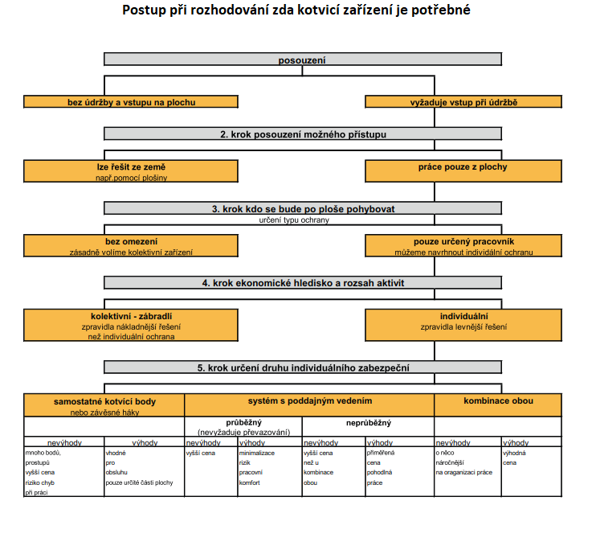
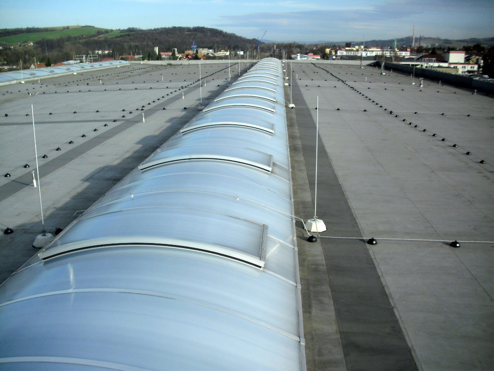
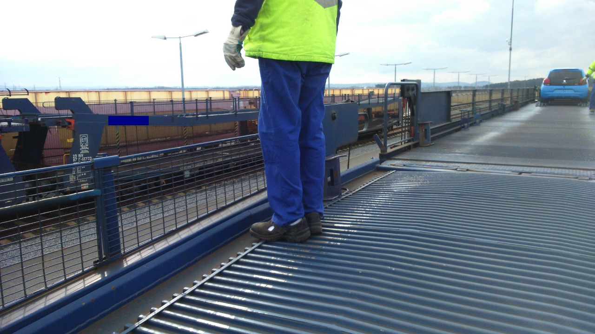
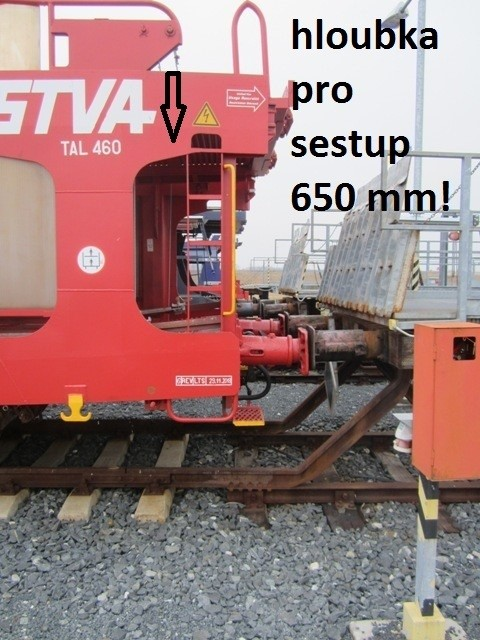

Aktuální články
Zadržovací systém v ochraně proti pádu - viz ČSN EN 363 Prostředky ochrany osob proti pádu - Systémy ochrany osob proti pádu
Zadržovací systém chrání uživatele před pády z výšky buď zabráněním volného pádu, nebo jeho zachycením. Omezuje pohyb tak, že je zabráněno dosažení oblastí, kde by mohlo dojít k pádu z výšky. Není určen pro zachycení pádu.
PRACOVNÍ POLOHOVACÍ SYSTÉM - viz ČSN EN 363 Prostředky ochrany osob proti pádu - Systémy ochrany osob proti pádu
Pracovní polohovací systém umožňuje uživateli pracovat v podepření nebo zavěšení takovým způsobem, že je zabráněno volnému pádu. Umožňuje uživateli zaujmout polohu v místě výkonu
Vyžaduje základní i záložní jištění.
Vhodným prostředkem pro držení těla je pás pro pracovní polohování (ČSN EN 358), sedací postroj (ČSN EN 813) nebo pás pro pracovní polohování (ČSN EN 358) začleněný do zachycovacího postroje (ČSN EN 361).
Vhodným spojovacím prostředkem je polohovací spojovací prostředek (ČSN EN 358) nebo nastavitelný spojovací prostředek (ČSN EN 354).
V případě varianty „sloup“ zatahovací zachycovač pádu jako záložní jištění i prostředek pro držení těla.
Obrázek 1 záložním jištěním může být například druhý nezávislý spojovací prostředek.
SYSTÉM ZACHYCENÍ PÁDU - viz ČSN EN 363 Prostředky ochrany osob proti pádu - Systémy ochrany osob proti pádu
Systém zachycení pádu zachycuje volný pád a omezuje rázovou sílu na tělo uživatele během zachycení pádu.
Nezabraňuje volnému pádu;
Dovoluje uživateli dosáhnout oblastí nebo poloh, ve kterých existuje riziko volného pádu, a pokud k němu doje, je zachycen;
Omezuje délku pádu a sílu nárazu na maximálně 6 kN;
Po zachycení pádu je uživatel držen v zavěšené poloze, ve které, pokud je to potřeba, může čekat na pomoc.
Systém zachycení pádu je sestává z:
Zachycovací postroj - viz ČSN EN 361, součástí má být tlumič pádu – viz ČSN EN 361, nebo ČSN EN 360, nebo pohyblivý zachycovač pádu – viz ČSN EN 353-14, případně 353-2.
Aby se zajistilo, že uživatel nenarazí do země nebo konstrukce nebo jiné překážky, musí se vzít v úvahu požadovaná minimální bezpečná výška pod nohami uživatele. Zde uživatelé nejčastěji chybují -správně neposoudí možnou výšku pádu – viz obrázky.
Například na bytových domech je systém ochrany proti pádu (kotvicí zařízení) je často navrženo tak, že pracovník může spadnout na níže ležící zábradlí balkonu, balkon, propadnout do okna.
SYSTÉM LANOVÉHO PŘÍSTUPU - viz ČSN EN 363 Prostředky ochrany osob proti pádu - Systémy ochrany osob proti pádu
Systém lanového přístupu umožňuje uživateli dostat se na místo a z místa výkonu v podepření nebo v zavěšení takovým způsobem, že je zabráněno volnému pádu nebo že je volný pád zachycen.
Umožňuje uživateli pohybovat se mezi vyššími a nižšími polohami a může dovolit přechod.
Zahrnuje pracovní a bezpečnostní lano, která jsou samostatně připojena ke konstrukci buď přímo, nebo použitím kotvicího zařízení.
Při navrhování kotvícího zařízení určeného pro tento způsob práce ve výšce je nutné body umístit tak, aby v každém místě práce byla možnost připojit se na dva různé body.
Na postroji zahrnuje dva různé připojovací body (nízký pro spojení s nastavovacím zařízením na pracovním laně a připojovací bod pro zachycení pádu).
Vhodným pracovním prostředkem pro držení těla je postroj odpovídající ČSN EN 361, který také odpovídá ČSN EN 813. Pro stabilitu by měla být také zvážena pracovní sedačka.
Poznámka: práce způsobem lanového přístupu vyžaduje speciální proškolení.
Blíže ČSN EN 363 Prostředky ochrany osob proti pádu – Systémy ochrany osob proti pádu
ZÁCHRANNÝ SYSTÉM - viz ČSN EN 363 Prostředky ochrany osob proti pádu - Systémy ochrany osob proti pádu
Umožňuje člověku zachránit sebe nebo jiné a zabraňuje volnému pádu.
Zabraňuje volnému pádu záchranáře během zachraňování.
Umožňuje zvedání nebo spouštění záchranáře do bezpečného místa.
Vhodným prostředkem pro držení těla by byl záchranný postroj odpovídající ČSN EN 1497 nebo záchranná smyčka odpovídající ČSN 1498.
Pokud je záchranná smyčka doporučuje se z ergonomických důvodů třída b odpovídající ČSN EN 1498.
Vhodným zvedacím zařízením by bylo záchranné zvedací zařízení odpovídající ČSN EN 1496. Vhodným spouštěcím zařízením by bylo slaňovací zařízení odpovídající ČSN EN 341.
Systém smí obsahovat součásti, které byly použity v jiných systémech, např. zachycovací postroj. Zatahovací zachycovač pádu s funkcí záchranného zvedání odpovídající ČSN EN 360 a ČSN EN 1496.
Připomenutí:
Zaměstnavatel zajistí, aby zaměstnanec provádějící práce při použití osobních ochranných pracovních prostředků proti pádu byl pro předpokládané činnosti vyškolen, zejména pak pro vyprošťovací postupy při mimořádných událostech.
Možnost včasného vysvobození pracovníka, znalost postupů a potřebné vybavení je jedním ze základních požadavků pro práci ve výšce.
Ochranu proti pádu zajišťuje zaměstnavatel přednostně pomocí prostředků kolektivní ochrany, kterými jsou zejména technické konstrukce, například ochranná zábradlí a ohrazení, poklopy, záchytná lešení, ohrazení nebo sítě a dočasné stavební konstrukce, například lešení nebo pracovní plošiny.
Prostředky osobní ochrany, kterými jsou osobní ochranné pracovní prostředky proti pádu, se použijí v případě, kdy povaha práce vylučuje použití prostředků kolektivní ochrany nebo není-li použití prostředků kolektivní ochrany s ohledem na povahu, předpokládaný rozsah a dobu trvání práce a počet dotčených zaměstnanců účelné nebo s ohledem na bezpečnost zaměstnance dostatečné.
Osobní ochranné pracovní prostředky se používají samostatně nebo v kombinaci prvků a součástí systémů a v souladu s návody k používání dodanými výrobcem tak, že je pád bezpečně zachycen a zachyceného zaměstnance lze neprodleně a bezpečně vyprostit, popřípadě dopravit do bezpečného místa; k zachycení pádu musí dojít v dostatečné výšce nad překážkou (terénem, podlahou, konstrukcí apod.), aby se vyloučilo zranění zaměstnance.
Blíže ČSN EN 363 Prostředky ochrany osob proti pádu – Systémy ochrany osob proti páduObrázky: ČSN EN 363 a nařízení vlády č. 362/2005 Sb. o bližších požadavcích na bezpečnost a ochranu zdraví při práci na pracovištích s nebezpečím pádu z výšky nebo do hloubky.
Závažné chyby v používání osobních ochranných prostředků proti pádu
Článek se věnuje použití osobních ochranných prostředků proti pádu (dále jen „OOPP“) formou zadržení a zachycení pádu – viz ČSN EN 363 Prostředky ochrany osob proti pádu – Systémy ochrany osob proti pádu (dále jen „norma“).
Práce ve výšce patří k velmi rizikovým činnostem. Následky pádu z výšky jsou zpravidla velmi vážné. Správná volba druhu a používání OOPP je důležitým předpokladem odpovídají ochrany proti pádu. Nesprávné použití OOPP, nesprávná délka spojovacího prostředku, nedostatečná bezpečná výška pro zachycení pádu a další nedostatky v používání OOPP mohou vést i při zachycení pádu k úrazu.
Systém zadržení je definován v normě jako systém, který omezuje pohyb uživatele tak, že je mu/ji zabráněno dosažení oblastí, kde by mohlo dojít k pádu z výšky. Není určen pro zachycení pádu a není určen pro situace, ve kterých uživatel potřebuje podporu prostředku pro držení těla (např. v podepření nebo zavěšení).
Systém zachycení pádu nezabraňuje volnému pádu, dovoluje uživateli dosáhnout oblasti nebo poloh, ve kterých existuje riziko volného pádu, a pokud k němu dojde, je zachycen. Omezuje délku pádu a sílu nárazu na maximálně 6 kN a po zachycení pádu je uživatele v zavěšené poloze, ve které, pokud je to potřeba, může čekat na pomoc.
Za závažné chyby v používání OOPP při práci ve výšce považuji: Nesprávně zvolený OOPP (použitý druh a jeho přizpůsobení tělu, nesprávné určení místa kotvení, nesprávná délka spojovacího prostředku s ohledem na výšku pádu, chybějící záchranný plán, nedodržení požadavku kontroly OOPP a chybějící školení a pokyny pro konkrétní práci ve výšce.
- Nesprávně zvolený OOPP. Pouze v systému zadržení pádu je možné použít prostředek pro držení těla (pás) a spojovací prostředek (lano) bez tlumiče pádu). V případě použití pásu bez tlumiče může při pádu a jeho zachycení dojít ke zranění páteře a vnitřních orgánech. V systému zachycení pádu je nezbytné používat zachycovací postroj a spojovací prostředek s tlumičem pádu. Přizpůsobení zachycovacího postroje tělu je důležitým předpokladem jeho správné funkce při zachycení pádu. Je potřebné mít na zřeteli i to, že každý pevný předmět, který je v kapsách, kde doléhají pásy zachycovacího postroje, může vést při zachycení pádu k otlakům na dolních končetinách.
- Místo kotvení musí být určeno před zahájením práce ve výšce při které je využíván OOPP proti pádu. Místo kotvení osobního ochranného pracovního prostředku proti pádu musí být ve směru pádu dostatečně odolné. ČSN EN 795 Prostředky ochrany osob proti pádu – Kotvicí zařízení požaduje pro kotvicí zařízení typu A (kotvicí zařízení s jedním nebo více stabilními kotvicími body…) splnit statické zatížení (odolnost 12 kN a u nekovových materiálů, kde není poskytnut důkaz o trvanlivosti) 18 kN. V případě kotvení se požadovaná statická pevnost zvyšuje o 1 kN za každou další osobu. Z těchto požadavků lez dovodit, že tyto požadavky na statickou pevnost musí splňovat každé určené místo kotvení. Jako místo kotvení je možné použít k tomu určené kotvicí zařízení (certifikovaný výrobek, případně zámečnický výrobek navržený kvalifikovaným inženýrem) nebo jiné místo, které však zcela jednoznačně a nezpochybnitelně naplňuje uvedené hodnoty statické pevnosti. V případě pochybnosti o dostatečné pevnosti není možné dané místo použít. Je plně na osobě určující místo kotvení, aby posoudil (nechal si posoudit, pokud není dostatečně k tomu kvalifikovaný) zda dané místo je vyhovující pro kotvení OOPP.
- Nastavení bezpečné délky spojovacího prostředku v systému zadržení pádu je nezbytné. Tento systém nedovoluje dosažení místa, kde by k pádu mohlo dojít. Předpokladem zachycení pádu v dostatečné výšce na překážkou, níže ležící plochou je rovněž nezbytné. Jako výhodné se jeví používat spojovací prostředek s možností nastavené délky. V České republice se v systému zachycení pádu považuje délka spojovacího prostředku, která je nejvýše součtem kolmé vzdálenost k nezabezpečené hraně/otvoru plus 1500 mm (odvozeno z nařízení vlády č.362/2005 Sb. o bližších požadavcích na bezpečnost a ochranu zdraví při práci na pracovištích s nebezpečím pádu z výšky nebo do hloubky). Tuto délku je však možné použít tam, kde je dostatečná výška pro bezpečné zachycení pádu. Při určení potřebné výšky je nutné zohlednit také různé výstupky v místě zachycení pádu, které by mohly způsobit zranění. Potřebnou výšku pádu pro bezpečné zachycení pádu tvoří: přesah spojovacího prostředku přes volnou hranu + rozvinutý textilní tlumič pádu (pokud je používán) + průhyb poddajného kotvícího vedení (pokud je místem kotvení) + výška člověka + 1000 mm rezerva. Při práci na plochách s výškou/hloubkou cca mně než 5,00 m je nezbytné potřebnou výšku pádu posuzovat velmi pečlivě. Součtem přesahu spojovacího prostředku 1500 mm, délky rozvinutého tlumiče pádu 1800 mm, průhybu poddajného kotvícího vedení - při délce poddajného kotvicího vedení 100 metrů je průhyb až 1500 mm, výšky člověka 2000 mm a potřebné rezervy1000 mm, zjistíme že potřebná bezpečná výška pro zachycení pádu bud v tomto případě je 6300 mm!
- Chybějící záchranný plán. Způsob vysvobození pracovníka, jehož pád byl zachycen, musí být vždy před zahájením prací ve výšce zajištěn. Neznamená to, že musí být zpracován v písemné formě. Vysvobození pracovníka není možné připravovat až po zachycení jeho pádu. Po zachycení pádu je nutné již postupovat podle předem daného postupu a s pomůckami, které jsou na místě práce ve výšce. Vysvobození pracovníka se předpokládá do 20-ti minut po zachycení pádu. To je poměrně krátká doba, aby bylo včasné vysvobození bez předchozí přípravy zajistit. Práce ve výšce nemůže tedy vykonávat osamocený pracovník, vždy musí být určena a přítomna osoba, která má dostatečné znalosti a prostředky pro včasné vysvobození pracovníka zachyceného v OOPP.
- Chybějící školení a pokyny pro konkrétní práci ve výšce. Pracovník, který má vykonávat práce ve výšce musí být řádně pro práci ve výšce proškolen, a to vždy pro danou konkrétní práci. Není správné, aby pracovník absolvoval pouze obecné školení pro práce ve výšce. Pracovník musí vykonávat pouze práce pro které byl vyslán, poučen, proškolen. Pracovníci oprávnění pro vyslání k práci ve výšce musí sami ovládat pravidla pro práci ve výšce, musí být obeznámeni se způsobem používání OOPP, znát, jak mohou být práce ve výšce prováděny, znát pracovní postupy i jaké má mít pracovník vybavení OOPP, jak má být zajištěn prostor pod místem práce a další. Často práci ve výšce ukládají pracovníci, kteří sami pravidla pro práci ve výšce neovládají, nemají dostatečné znalosti pro nařizování práce ve výšce. Pracovníci, kteří práci ve výšce konají ne vždy jsou s pracovními/technologickými postupy, které mají provádět, seznámeni. Nesprávně se jako dostatečné považuje „pouze“ proškolení pro práce ve výšce, bez toho, aby byly stanoveny konkrétní postupy pro danou činnost.
Podceňování rizik při práci ve výšce je časté. Jednou ze skutečností, která vede k podceňování rizika při pádu ve výšce je to, že v osobním životě provádíme práce ve výšce (např. česání ovoce, opravy na vlastním domu) a při této práci zpravidla nepoužíváme OOPP. Skutečnost, že pracovník se pohyboval ve výšce bez odpovídající ochrany proti pádu a k pádu nedošlo, není důvodem pro to, aby riziko pádu z výšky bylo podceňované, nebo zcela přehlížené.
Rozhodování projektanta stavby při navrhování opatření k ochraně proti pádu.
Řada projektantů tápe při rozhodování zda, a jaké opatření k ochraně proti pádu určené pro bezpečnou údržbu střechy a zařízení na ní umístěné, má navrhnout. Vypracoval jsem stručný přehled dílčích kroků při stanovení, zda opatření navrhnou a pokud ano, tak jaké.
Projektant je povinen dodržet tzv základní požadavky na stavby – viz Příloha 1 Základní požadavky na stavby Nařízení Evropského parlamentu a Rady (EU) č. 305/2011 a novela stavebního zákona č. 225/2017 Sb. novela stavebního zákona. Jedním ze základních požadavků je i požadavek na bezpečnost a přístupnost při užívání.
Předmětem toho článku je část – „bezpečnost při užívání stavby při údržbě střechy, zařízení a konstrukcí přístupných ze střešní plochy“.
Požadavek na bezpečnost při užívání stavby je obsažen zejména ve vyhlášce č. 268/2009 Sb. o technických požadavcích na stavby (např. § 8 základní požadavky, odst. 1, písmeno e)), v ČSN 73 1901 Navrhování střech – Základní ustanovení (např. oddíl 5.6. bezpečnost při užívání).
V § 8 odstavec 2 vyhlášky č. 268/2009 Sb. je uvedeno: „Stavba musí splňovat požadavky uvedené v odstavci 1 při běžné údržbě a působení běžně předvídatelných vlivů po dobu plánované životnosti stavby“. Z této formulace lze například dovodit, že pokud bude v průběhu života stavby nutné nap. Odstraňovat nadměrné množství sněhu, musí to být možné bezpečně provést.
§ 55 v odstavci 2 říká, že odchylky od norem jsou přípustné, pokud se prokáže, že navržené řešení odpovídá nejméně základním požadavkům na stavby uvedeným v § 8. Autor článku z toho dovozuje, že ty části ČSN, které se týkají bezpečnosti při užívání jsou závazné a je nutné je dodržovat, případně navrhnout řešení lepší, než požaduje norma. Poznámka: řada nových norem pro stavebnictví má již samostatný oddíl – bezpečnost při užívání, bezpečnostní požadavky apod.
V ČSN 73 1901 se také uvádí, že střecha musí být přiměřeně plánovanému provozu vybavena zábradlí nebo záchytným systémem pro jištění pracovníků údržby a pro upevnění jejich pomůcek při provádění kontroly, údržby i oprav střechy nebo zařízení a konstrukcí přístupných ze střešní plochy. V poznámce se dále uvádí, že bezpečnost osob je třeba řešit například u volných okrajů střešních ploch, u vyústění šachet a světlíků, n plochách o velkém sklonu (Poznámka autora: viz nařízení vlády č.362/2005 Sb. o bližších požadavcích na bezpečnost a ochranu zdraví při práci na pracovištích s nebezpečím pádu z výšky nebo do hloubky), v okolí nebezpečných technologických zařízení apod. Konstrukce střechy musí také umožnit kontrolu a údržbu zařízení na ochranu před bleskem. Střecha, na které je umístěno technologické zařízení nebo komín, musí být navržena jako pochůzná alespoň v částech určených pro přístup k zařízení nebo komínu.
Řada projektantů váhá nad tím, co je považováno za přiměřené opatření. Autor se domnívá, že pokud při údržbě stavby/střechy bude vznikat riziko pádu z výšky, je nutné, aby pracovník měl možnost toto riziko eliminovat. Když tedy tato situace nastane, je potřebné navrhnout ochranné zábradlí nebo kotvicí zařízení dle ČSN EN 795 Prostředky ochrany osob proti pádu – Kotvicí zařízení. Je tedy na projektantovi, aby vyhodnotil riziko při provádění potřebné údržby a následně navrhl potřebné řešení.
Jeden z možných postupů při rozhodování projektanta je uveden v této tabulce:

Bezpečnost při práci na plochých a šikmých střechách
Provádění montážních a údržbových činností, zejména například odklízení nadměrného množství sněhu na plochých i šikmých střechách, je vždy spojeno se značným rizikem pádu.
Základní rizika vzniku úrazů pádem jsou tři:
- přepadnutí přes hranu střechy,
- propadnutí střechou,
- propadnutí otvorem ve střeše (např. nechráněný světlík).
Riziko vzniku úrazu není pouze při výstavbě objektu, ale také při zajišťování provozu stavby. Především v zimním období je riziko uklouznutí a následného pádu velmi vysoké. Zajistit pak například vhodnou vysokozdvižnou plošinu, ke které by byl pracovník kotven, je často problematické. Přitom třeba obsluha klimatizačních jednotek si vyžaduje pravidelnou přítomnost na střeše.
Všem těmto možnostem lze poměrně snadno předejít použitím vhodných systémů zabezpečení ochrany osob proti pádu. Nejčastějším důvodem, proč nejsou tyto systémy osazovány, je úspora peněz na místě, kde to není příliš vhodné. Přitom u nových staveb lze tento problém vyřešit využitím vhodných bezpečnostních prvků použitelných při provádění stavebních prací a následně ponechat tyto kotvicí systémy pro údržbu a další práce na střeše.
Základní problém spočívá v malé znalosti povinností jak projekčními kancelářemi, tak i zadavatelem stavby a jejím provozovatelem. Bohužel i zde je špatná přehlednost příslušných právních norem obecným problémem našeho právního řádu. Svoji roli dostatečně neplní ani profesní komory, které by mohly svým členům poskytovat dostatek potřebných informací o právních předpisech i na úseku bezpečnosti práce na střechách.
Většina stavebních firem je sice obeznámena s bezpečnostními předpisy při provádění stavebních prací, ale protože nemají často žádnou návaznost na provozovatele stavby, nezabývají se možností použít takové bezpečnostní prvky, které by na stavbě zůstaly i po skončení jejich práce. V projektové dokumentaci pak chybí i to nejzákladnější zpracování návrhu bezpečnostních prvků pro provoz stavby.
Je pochopitelné, že ve velkém množství předpisů se projektanti orientují jen stěží, ale nelze jim to mít za zlé. Proto jako optimální je možné vidět postup, kdy firmy, které na našem trhu nabízejí tyto systémy, poskytnou zpracovatelům projektových dokumentací, případně i vlastníkům již existujících objektů odborné poradenství nebo i vypracování projektu bezpečnostních prvků na danou stavbu.
Způsoby řešení bezpečnosti na střechách
Vhodné systémy zabezpečení osob proti pádu lze rozdělit do dvou základních skupin.
- Přenosné kotvicí prostředky. Jejich nevýhodou je, že pro vlastní údržbové práce na střechách nezůstávají a že tedy slouží pouze firmě, která provádí konkrétní činnost při výstavbě. Pro údržbu je nutné řešit zabezpečení osob následně, což zvyšuje náklady.
- Trvalé kotvicí systémy. Po dokončení stavby zůstávají na střeše a jsou k dispozici při kontrole a údržbě např. vzduchotechniky či klimatizace nebo pro běžné opravy, údržbu, případně při odklízení nadměrného množství sněhu. Jakékoliv dodatečné osazování na již hotových střechách je složité vzhledem k zajištění potřebné vodotěsnosti v místě osazení kotevních prvků.
Ze všech systémů lze volit dva základní, případně jejich kombinaci. Jsou to:
- jednotlivé kotvicí body – jejich nevýhodou je poměrně vysoká četnost těchto bodů a možnost pádu při uchycování se k dalšímu kotevnímu bodu;
- lanové systémy – umožňují snížit počet kotevních bodů a tím i počtu prostupů, vylučují riziko chyby při uchycování se k dalšímu jednotlivému bodu. Navíc mohou být provedeny i jako průběžné, které v odůvodněných případech poskytují vysoký pracovní komfort;
- kombinace těchto dvou systémů – vhodné řešení i tam, kde se předpokládá velká šíře pohybu osob; na těchto místech se uplatní lanový systém. Tam, kde práce probíhají v relativně malém prostoru, lze použít jednotlivé kotevní body. Ty je možné osadit i na vhodné konstrukce, např. na vzduchotechniku.
Nejčastější chyby v plánování, resp. projektování bezpečnostních prvků
- Nesprávná vzdálenost k nejvzdálenějšímu místu předpokládaného pohybu osob, a tím možnost zvolení nesprávné délky lana osobního úvazu a velké výšky volného pádu. Výška volného pádu nemá přesahovat 2,0 m.

- Nerespektování ploch, které brání volné výšce pádu, jako jsou například nižší stříška, níže ležící balkon a další.

- Nepočítá se s místem výlezu na střechy. Pracovník pak nemá v odpovídající vzdálenosti od žebříku nebo plošiny možnost uchycení lana a musí překonat určitou vzdálenost, aniž by byl jištěn.
- V okolí míst možného propadu otvory ve střeše, zejména v blízkosti světlíků, nejsou osazeny kotvicí prvky. Při čištění nebo opravě světlíku může pracovník snadno propadnout otvorem.
- Klimatizační jednotky umístěné na střechách vyžadují častou přítomnost pověřené osoby. Bývají však mnohdy umístěny v blízkosti hrany přepadu, ovšem není zajištěn bezpečný přístup z místa výlezu na střechu ani bezpečný pohyb v okolí těchto jednotek.
- Šikmé střechy často nejsou z hlediska bezpečnosti pohybu na nich řešeny vůbec. Při tom kotevní hák, který umožní jak poutání, tak bezpečné položení žebříku je finančně málo náročným řešením.
- U provozovatele (správce, údržby) budovy není uložen osobní úvaz s potřebnými součástmi tak, aby měl možnost je použít každý, kdo je pověřený vstupem na střechu.
Závěrem lze konstatovat, že nedostatečné řešení bezpečnosti práce na střechách patří k velkým problémům našeho stavebnictví a provozu budov. Pády ze střech mají téměř vždy vážné následky. Proto pověření oprávněné firmy zpracováním technického řešení a také osazení bezpečnostních prvků je rozhodně správnou volbou.
Bezpečnost a přístupnost při užívání v Nařízení Evropského parlamentu a Rady (EU) č. 305/2011 – bezpečnost a přístupnost při užívání - základní požadavek na stavby v oblasti ochrany proti pádu
Nařízení Evropského parlamentu a Rady (EU) č. 305/2011, kterým se stanoví harmonizované podmínky pro uvádění stavebních výrobků na trh (dále jen Nařízení EP“) v Příloze 1 stanovuje nově pro celou EU základní požadavky na stavby. Jedním ze základních požadavků je požadavek na bezpečnost a přístupnost při užívání.
Tyto základní požadavky jsou závazné od doby, kdy vstoupilo nařízení EP v platnost (nejpozději 1. července 2013) bez ohledu na to, zda byla již převzata do národního práva. Je nutné vzít na vědomí, že se musíme seznamovat i s nařízeními EP a Rady (EU), které platí v našem oboru.
I v případě, kdy budeme čekat, až bude obsah Nařízení EP a Rady (EU) implementován do národních předpisů, v národních předpisech se zpravidla obsah nařízení EP nedočteme. Do národního práva je dnes většinou již jen vkládaný odkaz na příslušné Nařízení EP a Rady (EU). Vlastní obsah se pak v zákonech neobjevuje. Tak tomu je i s nařízením EP.
V novele stavebního zákona č. 225/2017 Sb., která vstoupila v platnost 1. 1. 2018 je konkrétně uvedeno v § 156 odst. 1: „požadavky na mechanickou odolnost a stabilitu, požární bezpečnost, hygienu, ochranu zdraví a životního prostředí, bezpečnost při udržování a užívání stavby včetně bezbariérového užívání stavby, ochranu proti hluku a na úsporu energie a ochranu tepla“ nahrazují slovy „základní požadavky na stavby73)“. Poznámka pod čarou č. 73) pak zní: „73) Příloha I nařízení Evropského parlamentu a Rady (EU) č. 305/2011 ze dne 9. března 2011, kterým se stanoví harmonizované podmínky pro uvádění stavebních výrobků na trh a kterým se zrušuje směrnice Rady 89/106/EHS.“.
O obsahu nařízení EP se víc dočteme až v nařízení EP. Toto nařízení EP v příloze 1 uvádí: „Stavby jako celek i jejich jednotlivé části musejí vyhovovat zamýšlenému použití, zejména s přihlédnutím k bezpečnosti a ochraně zdraví osob v průběhu celého životního cyklu staveb. Po dobu ekonomicky přiměřené životnosti musí stavby při běžné údržbě plnit základní požadavky na stavby.
V Příloze 1 nařízení EP se stanovují základní požadavky na stavby, které jsou od doby, kdy toto nařízení vstoupilo v platnost, společná pro všechny země EU.
Pro oblast prací ve výšce při provádění údržby je podstatný požadavek č. 4 „Bezpečnost a přístupnost při užívání“, tento požadavek zní: Stavba musí být navržena a provedena takovým způsobem, aby při jejím užívání nebo provozu nevznikalo nepřijatelné nebezpečí nehod nebo poškození, např. uklouznutím, pádem, nárazem, popálením, zásahem el. proudu, zraněním výbuchem a vloupání.
Současně s plněním základních požadavků na stavby je nutné akceptovat i požadavky vyhlášky č.268/009 Sb. o technických požadavcích na stavby. Důležitý je § 8 odstavec 2, kde se ukládá, že stavba musí splňovat požadavky uvedené v odstavci 1 při běžné údržbě a působení běžně předvídatelných vlivů po dobu plánované životnosti stavby.
Jako předvídatelný vliv, je jistě možné považovat v řadě lokalit ČR výskyt nadměrného množství sněhu. Jeho odstraňování ze střešního pláště je mimořádně riziková činnost a zpravidla v situaci, kdy tato skutečnost nastane, není možné na střeše, která neumožňuje ochranu osob proti pádu, již žádné opatření realizovat.
Často se setkávám s dotazem, co je nepřijatelné nebezpečí. Odpověď platnou pro všechny situace neumím zformulovat. Umím však vyslovit názor, jak má postupovat projektant a zhotovitel stavby. Uvedu příklad platný pro práce na střechách:
- Projektant zná (musí znát) jaké práce při provádění údržby budou prováděny a jaká rizika budou těmto pracovníkům hrozit. Nejčastějším rizikem je riziko pádu z výšky. Pokud takové riziko vzniká, je projektant povinen navrhnout stavbu tak, aby bylo možné toto riziko eliminovat. To neznamená, že na všech plochách bude navrženo kotvicí zařízení, bude navrženo tam, kde to charakter a povaha práce vyžaduje a nelze ji zajistit jiným, nerizikovým postupem. Jsem přesvědčený, že pokud projektant nesplní tento požadavek, půjde o zjevnou vadu projektu. Zjevnou vadou zejména proto, že při „pouhém“ seznámení se s projektovou dokumentací, lze tuto vadu zjistit.
- Projektant je také povinen dle ČSN 73 19101 Navrhování střech – Základní ustanovení stanovit režim prohlídek, kontrol, údržba a obnovy. Jako pomůcka mu může sloužit Příloha H této normy, kde jsou uvedeny doporučené cykly obnovy a kontrol.
- Zhotovitel pak musí na zjevnou vadu projektu upozornit, má k dispozici autorizovaného stavbyvedoucího, u kterého oprávněně předpokládám znalosti v oblasti základních požadavků na stavby. Pokud tak neučiní, vada projektu se stává i vadou díla. Z praxe znám řadu případů, kdy byla tato zásada úspěšně uplatněná vůči projektantovi i zhotoviteli, kteří nedodrželi základní požadavky na stavby.
Pro lepší vysvětlení tohoto názoru, uvedu konkrétní příklad:
- U projektanta si objednám projekt rodinného domu, kde bude na střeše komínové těleso. Komín vyžaduje nejméně pravidelné prohlídky stavu spalinových cest. Je tedy nutné mít bezpečnou možnost se ke komínu „dostat“ i bezpečně kontrolu provést.
- U zhotovitele si následně objednám provedení stavby tohoto rodinného domu. Očekávám, že dodá dílo bez vad a že dílo splní základní požadavky na stavby.
- Já, jako stavebník do doby, než stavbu převezmu a užívám, nemusím vědět, že budu povinen například zajišťovat kontrolu spalinových cest.
Obdobná situace nastává například při kontrole zařízení určených k ochraně před bleskem. I tu je nutné provádět a musí být možnost bezpečně tuto práci provádět. Samozřejmě, že je možné tyto práce provádět v některých případech i ze zdvižných plošin. Objednavatel projektu však musí být v projektové dokumentaci upozorněn, že takový způsob projektant předpokládá a je na něm, aby zvážil, zda toto řešení bude, zejména s ohledem na předpoklad vyšších nákladů, akceptovat.
Pro časopis Inovace
Mojmír Klas
12. 11. 2019
Práce s řetězovou pilou na staveništi
Nařízení vlády č. 339/2017 Sb., o bližších požadavcích na způsob organizace práce a pracovních postupů při práci v lese a na pracovištích obdobného charakteru (dále jen „nařízení vlády“) stanovuje řadu povinností, které je nutné dodržet i při práci s řetězovou pilou na staveništi.
Řada zaměstnavatelů, OSVČ, stavbyvedoucích a koordinátorů BOZP na staveništi si nemusí uvědomit, že tento právní předpis stanovuje požadavky pro bezpečnost práce při provádění stavby všude tam, kde je řetězová pila používána.
Za pracoviště obdobného charakteru jako práce v lese, považuje nařízení vlády situace, vždy, kdy se pracuje s řetězovou pilou. Řetězové pily jsou běžně na staveništích používány a je tedy nutné respektovat nově stanovené požadavky.
Mezi všeobecné požadavky stanovené nařízením vlády zejména patří:
- O předání pracoviště jinému zaměstnavateli musí být vyhotoven záznam, který musí obsahovat informace o rizicích a přijatých opatřeních k ochraně před jejich působením.
- Zaměstnavatel musí zajistit, aby osamocený zaměstnanec nebo samostatně pracující zaměstnanec přerušili práci, pokud nemohou pokračovat v práci bezpečným způsobem, a o přerušení práce informovali bez zbytečného odkladu zaměstnavatele. (Poznámka autora: na staveništi bude potřebné, aby místní předpis určil povinnost informovat také např. stavbyvedoucího).
- S ohledem na rizika vykonávané pracovní činnosti, charakter pracoviště a počet zaměstnanců zaměstnavatel musí zajistit, aby zaměstnanci vykonávající práce s řetězovou pilou, křovinořezem nebo ručním nářadím s ostřím byli vybaveni prostředky pro poskytnutí první pomoci, včetně zajištění prostředků umožňujících přivolání poskytovatele zdravotnické záchranné služby. (Poznámka autora: na staveništi bude potřebné, aby místní předpis tuto povinnost specifikoval pro podmínky daného staveniště).
- Práce mohou vykonávat pouze zaměstnanci, kteří byli k této činnosti vyškoleni a v ní zacvičeni a jejichž znalosti a dovednosti byly ověřeny zaměstnavatelem.
Při práci s řetězovou pilou musí zaměstnavatel zajistit, aby řetězové pily nebyly používány bez krytu pohybujících se částí řetězové pily, mimo činné části pilového řetězu, účinného antivibračního systému, zachycovače roztrženého řetězu, účinné bezpečnostní brzdy řetězu a aby tyto bezpečnostní prvky byly během používání řetězové pily plně funkční.
Dále zaměstnavatel musí zajistit, aby řetězová pila se spalovacím motorem nebyla používána bez tlumiče výfuku, spojky automatického vypínání chodu řetězu při volnoběžném chodu motoru, funkční dlaňové pojistky, umístěné v horní části zadní rukojeti řetězové pily. Musí zajistit, aby obsluhou řetězové pily byl pověřen pouze zaměstnanec starší 18 let, který je k uvedené činnosti zdravotně způsobilý. (Poznámka autora: Práce s řetězovou pilou musí být zaznamenána jak v žádosti o provedení pracovnělékařské prohlídky
a posouzení zdravotní způsobilosti k práci, tak zejména v lékařském posudku o zdravotní způsobilosti k práci. Protože vyhláška č.79/2013 tuto práci samostatně nespecifikuje, na rozdíl od jiných činností s ohrožením zdraví, mělo by se jednat o „Další práce nebo činnosti s rizikem ohrožením zdraví“ které by si měl vyhodnotit společně se svým poskytovatelem pracovně lékařských služeb a v rámci prevence rizik stanovit, např. v interním předpisu, zaměstnavatel).
Rovněž tak zajistit, aby zaměstnanec při práci s řetězovou pilou vždy používal ochranný oděv a pracovní obuv odolnou proti pořezání a další osobní ochranné pracovní prostředky stanovené zaměstnavatelem, s přihlédnutím k návodu výrobce na obsluhu řetězové pily.
Je zakázáno provádět práce s řetězovou pilou ze žebříku, přidržovat rozřezávané dříví rukou nebo nohou. V průběhu práce podle potřeby musí zaměstnanci kontrolovat stav bezpečnostních prvků řetězové pily, a pokud bezpečnostní prvky nejsou funkční, řetězovou pilu je zakázáno používat. Pila pak smí být startována způsobem, který neohrozí zaměstnance nebo jiné fyzické osoby vyskytující se na pracovišti. Za zmínku stojí rovněž požadavek, aby zaměstnanci nepracovali osamoceně.
Pro práci s řetězovou pilou ve výšce – (viz nařízení vlády č. 362/2005 Sb. o bližších požadavcích na bezpečnost a ochranu zdraví při práci na pracovištích s nebezpečím pádu z výšky nebo do hloubky) musí zaměstnavatel zajistit zpracování místního provozního bezpečnostního předpisu. (Poznámka autora: forma tohoto předpisu, jeho zveřejnění, seznámení s ním a další bude pravděpodobně odlišná dle podmínek na daném staveništi. Na staveništi s určeným koordinátorem BOZP, může být tento předpis součástí informace zhotovitele, kterou nejpozději do 8 dnů před zahájením prací na staveništi musí písemně předat koordinátorovi).
Nově není zapotřebí vést evidenci počtu hodin provozu za měsíc, ale pouze o výsledcích revizí, kontrol a oprav řetězové pily.
Odůvodněně lze předpokládat, že státní úřad bezpečnosti práce bude na dodržování požadavků nařízení vlády dohlížet.
Ing. Milan Kondziolka, Ing. Mojmír Klas, CSc.
V časopisu Z+i ČKAIT byl zvěřejněn náš článek:
z-i_2_2018_celek_poslední verze.pdf (4376224)
Ochrana proti pádu často nevyžaduje žádné finanční prostředky navíc.
Prakticky každý týden navštívím několik plochých střech. Je výjimkou, pokud na střeše nevidím závadu, která má vliv na bezpečnost pracovníků při práci ve výšce. V tomto příspěvku uvádím nesprávné umístění pochůzných pásů. Pochůzné pásy jsou často zcela zbytečně na ploše, kde je pracovník bezprostředně ohrožen pádem z výšky.
Zde je jeden z příkladů, kdy projektant, zhotovitel nepřemýšlel nad tím, že nevhodným umístěním pochůzného pásu (vpravo od pásového plastového světlíku), pracovníka pás navede bezprostředně ke světlíku. Pracovník zde nemá možnost použití osobních ochranných prostředků proti pádu. Na levé straně stejného světlíku, je pochůzný pás umístěný tak, že pracovník při chůzi po tomto pásu jde v dostatečné vzdálenosti od světlíku a při přiblížení ke světlíku, má možnost použít kotvicí zařízení dle ČSN EN 795 k ochraně proti pádu do otvoru nechráněného proti propadnutí.

Posunutí pásu vpravo dostatečně daleko od světlíku, by vedlo ke zvýšení bezpečnosti práce, bez navýšení nákladů na stavbu.
Mojmír Klas
Povinnost navrhovat kolektivní ochranu proti pádu při údržbě a přístupnosti staveb
V praxi se při volbě mezi kolektivní ochranou proti pádu a použití osobních ochranných prostředků velmi často chybuje. Osobní ochranné prostředky se často používají i tehdy, kdy měla být navržena kolektivní ochrana proti pádu.
Povinnost zajistit bezpečnost a přístupnost stavby při užívání je uložena v § 8 vyhlášky č. 268/2009 Sb. o technických požadavcích na stavby (dále jen „vyhlášky“). V § 8 vyhlášky je uvedeno, že stavba musí být navržena a provedena tak, aby splnila základní požadavky na stavby (tedy také bezpečnost při užívání) pro určené využití a při běžné údržbě a působení běžně předvídatelných vlivů po dobu plánované životnosti stavby – viz písmeno e) § 8 a odstavec 2 § 8 vyhlášky.
Vyřešit v projektové dokumentaci a při provedení stavby bezpečnost a přístupnosti staveb je uložena nařízení Evropského parlamentu a Rady (EU) č. 305/2011 (dále jen „nařízení EP“), v Příloze 1 – „Základní požadavky na stavby“. Zde se mimo jiné uvádí, že stavby jako celek i jejich jednotlivé části musejí vyhovovat zamýšlenému použití, zejména s přihlédnutím k bezpečnosti a ochraně zdraví osob v průběhu celého životního cyklu staveb. Po dobu ekonomicky přiměřené životnosti musí stavby při běžné údržbě plnit požadavky uvedené v Příloze 1 nařízení EP. Jedním ze základních požadavků je bezpečnost a přístupnost při užívání. Bezpečnost a přístupnost staveb zahrnuje dle nařízení EP mimo jiné též nepřijatelné riziko, které může nastat uklouznutím a pádem.
Nově je povinnost plnit základní požadavky Přílohy 1 nařízení EP, uložena v § 156 zákona č. 225/2017 Sb. zákon, kterým se mění zákon č. 183/2006 Sb., o územním plánování a stavebním řádu (stavební zákon), ve znění pozdějších předpisů, a další související zákony. Zde je uložena povinnost plnit základní požadavky na stavby dle nařízení EP.
V § 3 nařízení vlády č. 362/2005 Sb. o bližších požadavcích na bezpečnost a ochranu zdraví při práci na pracovištích s nebezpečím pádu z výšky nebo do hloubky je uvedeno: Ochrana proti pádu se zajišťuje přednostně pomocí prostředků kolektivní ochrany, kterými jsou zejména technické konstrukce, například ochranná zábradlí a ohrazení, poklopy, záchytná lešení, ohrazení nebo sítě a dočasné stavební konstrukce, například lešení nebo pracovní plošiny. Prostředky osobní ochrany, kterými jsou osobní ochranné pracovní prostředky proti pádu (dále jen „OOPP“), se použijí v případě, kdy povaha práce vylučuje použití prostředků kolektivní ochrany nebo není-li použití prostředků kolektivní ochrany s ohledem na povahu, předpokládaný rozsah a dobu trvání práce a počet dotčených zaměstnanců účelné nebo s ohledem na bezpečnost zaměstnance dostatečné. Je tedy zejména na projektantovi, aby vyhodnotil jaké práce, a v jakém rozsahu se budou při údržbě stavby provádět a zda je možné předpokládat pro dané práce používání OOPP nebo, zda musí být již v projektu navržena kolektivní ochrana proti pádu.
V praxi se běžně setkávám s názorem, že nejdůležitějším z kritérií, pro návrh a použití OOPP, je ekonomické hledisko. Zpravidla jsou náklady na instalaci kolektivní ochrany vyšší než náklady při používání OOPP. Považuji za nutné zdůraznit, že při těchto úvahách se neuvažuje s náklady na případné léčení úrazu po pádu z výšky, možnost doživotní invalidity i možnost úmrtí na následky pádu z výšky. Při zohlednění i těchto skutečností se hodnocení vyšších nákladů na kolektivní ochranu jeví jinak.
Zcela jednoznačně má být upřednostňována kolektivní ochrana proti pádu při výstavbě a rekonstrukci staveb. S použitím OOPP je možné s ohledem na rozsah, četnost a počet dotčených zaměstnanců uvažovat při údržbě staveb. I tehdy však není možné bez posuzování možného rizika, vyloučit kolektivní ochranu proti pádu a navrhovat použití osobních ochranných prostředků.
V případě, že použití prostředků OOPP je v souladu s nařízením vlády a vyhodnocením rizik, je nutné správně navrhnout umístění kotvicího zařízení – viz ČSN EN 795 Prostředky ochrany osob proti pádu – Kotvicí zařízení. Navrhnout kotvicí zařízení tak, aby bylo možné bezpečně vykonat práce a aby byla maximálně vyloučena lidská chyba, je často velmi obtížné. Běžně se setkávám s tím, že firmy, které kotvicí zařízení sami zpracují návrh na umístění kotvicího zařízení a následně i instalují, postupují chybně. Mezi nejčastější nedostatky takových firem v navrhování a instalacích kotvicího zařízení patří:
- Není zohledněna práce v situaci, kdy plocha bude kluzká;
- Není správně vyhodnocena potřebná výška pro bezpečné zachycení pádu;
- Není vyřešen bezpečný přístup k otvorům nechráněným proti propadnutí;
- Není zohledněno případné odstraňování nadměrného množství sněhu ze střešního pláště;
- Není vyřešen bezpečný pohyb od místa výstupu na plochu ke kotvicímu zařízení;
- Kotvicí zařízení je navrženo tak, že je nutné používat mnoho různých délek spojovacích prostředků. Není tak možné správně instruovat pracovníka o způsobu použití OOPP. Neúměrně se tím zvyšuje nebezpeční záměny délky spojovacího prostředku;
- Instalační dokumentace dodávaná po instalaci (viz Příloha A ČSN EN 795) je neúplná, obsahuje neúplné nebo nesrozumitelné pokyny pro používání kotvicího zařízení, nebo je neobsahuje vůbec;
- V instalační dokumentaci není uvedeno pro jaký účel – viz ČSN EN 363 Prostředky ochrany osob proti pádu – Systém ochrany osob proti pádu, bylo kotvicí zařízení navrženo;
- Není ani výjimkou, že instalační dokumentace není dodána vůbec.
Docílit zlepšení při rozhodování mezi kolektivní ochranou proti pádu a individuální ochranou proti pádu z výšky, je a bude obtížný a dlouhodobý proces. V této oblasti postrádám dostatečnou osvětovou činnost mezi projektanty, zhotoviteli staveb a také mezi zadavateli staveb. Je nasnadě, že nelze očekávat od ministerstva práce a sociálních věcí významnější aktivitu při vysvětlování požadavků č. 362/2005 Sb. o bližších požadavcích na bezpečnost a ochranu zdraví při práci na pracovištích s nebezpečím pádu z výšky nebo do hloubky. Také Komora bezpečnosti a ochrany zdraví při práci a požární ochrany České republiky není k této činnosti dostatečně způsobilá. V určitém rozsahu se tomuto tématu věnuje profesní seskupení Společná VIZE i to je však do určité míry ovlivňováno právě instalačními firmami.
Je pochopitelné, že firmy, které instalují kotvicí zařízení, mají často na prvním místě svůj ekonomický zájem. Rovněž nevhodná je praxe, kdy jedna a táž firma vypracuje návrh systému ochrany proti pádu, provede instalaci kotvicího zařízení a následně také provádí výchozí prohlídku s následnými periodickými prohlídkami kotvicího zařízení - viz ČSN EN 365 Osobní ochranné prostředky proti pádu z výšky – Všeobecné požadavky na návod k používání, údržbě periodické prohlídce, opravě, značení a balení.
Instalační firmy často nabízejí pro projektanty vypracování návrhu systému určenému k ochraně proti pádu zdarma, to vede projektanty k využívání těchto „levných“ služeb. Projektant, zhotovitel i budoucí provozovatel stavby je tak plně v „moci“ instalační firmy - prodejce kotvicího zařízení. Projektant stavby – HIP, nemá většinou dostatečné znalosti pro posouzení správnosti vypracovaného návrhu. Také stavbyvedoucí na tom není o nic lépe. Svůj dopad má i požadavek na snížení ceny za instalaci kotvicího zařízení. Zakázku tak často získá firma, která některé nezbytné části kotvicího zařízení neprovede. Nejčastější je to neosazení permanentního poddajného kotvicího vedení a nevyřešení bezpečného pohybu po celé ploše. Tato firma je levnější a „žádanější“.
Negativní roli též sehrává skutečnost, že většina výrobců není ochotna poskytnout oprávnění pro provádění periodických prohlídek jiným osobám nebo organizacím, než těm, kteří jejich výrobky prodávají a instalují. To pak vede k bludnému kruhu – návrh – instalaci – výchozí prohlídku – periodické prohlídky provádí tatáž osoba/společnost. Z vlastní praxe vím, že jsou často záměrně přehlíženy nedostatky v návrhu a provedení systému ochrany proti pádu.
Práce ve výšce a nad volnou hloubkou je velmi riziková práce. Následky pádu mohou být fatální. Jako nezbytné se tedy jeví zvyšování znalostí projektantů, zhotovitelů i pracovníků v oblasti bezpečnosti práce při vyhodnocování rizik při práci ve výšce a nad volnou hloubkou.
Březen 2018
Mojmír Klas
Ochrana proti pádu z výšky při kontrolách spalinových cest a kontrolách zařízení určených na ochranu před bleskem.
Ochrana proti pádu z výšky je mimořádně významná. Zranění následkem pádu jsou zpravidla velmi vážná, často dochází i ke smrtelným úrazům. Pozornost této oblasti je potřebné věnovat nejen při instalaci zařízení určeného na ochraně před bleskem, ale i při stavbě komínového tělesa, na kterém má být prováděna kontrola spalinových cest. Základním pravidlem by mělo být, že ten, kdo navrhuje, zhotovuje tato zařízení a tyto části stavby, již při návrhu „pamatuje“ na možnost bezpečné údržby, převážně na ochranu proti pádu. Přesto jsme stále svědky toho, že není pamatováno na ochranu proti pádu kominíka, který bude provádět kontrolu spalinových cest a na elektrikáře, který bude provádět revizi zařízení určeného na ochranu před bleskem.
U nově připravovaných staveb je úkolem projektanta a následně zhotovitele, aby navrhli a zhotovili stavbu tak, aby byla bezpečná při užívání (viz také základní požadavky na stavby). Ale i při údržbě stavby. U stávajících staveb je potřebné věnovat vyšší pozornost bezpečnosti své a svých pracovníků, tedy těch, kteří provádějí kontrolní, revizní a údržbové práce. Stávající stavby v převážné většině nejsou dostatečně vybaveny technickými zařízeními, která by umožnila odpovídající ochranu proti pádu.
Jednotlivé profesní skupiny (kominíci a elektrikáři) často přijímají zakázky na kontrolní a revizní činnost, aniž se zabývají skutečností, že stavba není uzpůsobené bezpečné práci ve výšce. Následně pak práce provedou bez potřebné ochrany proti pádu.
Kontrola spalinových cest
Běžný pohled na střechy rodinných a bytových domů dokládá, že většina těchto střech není vybavena pro bezpečný přístup ke komínovému tělesu a pro bezpečnou práci při vlastní kontrole spalinových cest. Výlezy na šikmou střechu, jsou často zbytečně daleko od komínového tělesa, na střeše nejsou instalovány střešní bezpečnostní háky (viz ČSN EN 517 Prefabrikované příslušenství pro střešní krytiny – Bezpečnostní střešní háky), nebo není instalováno kotvicí zařízení (viz ČSN EN 795 Prostředky ochrany osob proti pádu – Kotvicí zařízení), nejsou osazeny nášlapné tašky nebo střešní lávky. Pokud je komínová lávka zřízena, je obvykle ve špatném technickém stavu – ztrouchnivělé dřevo, korozí narušená ocelová konstrukce, případně úplně chybějí některé části lávky.
Přesto se i zde se provádí kontrola spalinových cest. Zhodnotit bezpečnost přístupu ke komínovému tělesu, lze pouhým pohledem na šikmou střechu.
Významnou roli v nápravě současného nevyhovujícího stavu, tedy kdy kominíci jsou vystavení riziku pádu a při tom nemají možnost se odpovídajícím způsobem proti pádu chránit, musí sehrát právě sami kominíci. Pokud však bude vynucování potřebných úprav střech pro bezpečný pohyb na jednotlivých kominících, nelze očekávat velký pokrok. V zájmu získání zakázky lze očekávat, že kontroly spalinových cest budou prováděny bez potřebné ochrany proti pádu. Tento příspěvek má apelovat na profesní sdružení kominíků, aby byla jednotlivým kominíkům nápomocná při tlaku na majitele, správce domů k provedení oprav nevyhovujících zařízení nebo instalaci zařízení, které by sloužilo pro bezpečnou práci kominíků ve výšce.
Zařízení na ochranu před bleskem
Zařízení určená na ochranu před bleskem, jsou téměř vždy na plochách, kde je pracovník, který provádí pravidelnou revizi, vystaven riziku pádu.
Ti, kteří osazují zařízení na ochranu před bleskem, si jistě uvědomují, jestli bude možné bezpečně provádět revize tohoto zařízení. V praxi se však nestává, že by na skutečnost, že střecha není vybavena pro bezpečnou práci při revizi, upozornili projektanta nebo zhotovitele stavby. Často právě tyto firmy instalují zařízení na ochranu před bleskem bez potřebné ochrany svých pracovníků proti pádu.
U stávajících staveb je situace v oblasti ochrany proti pádu při kontrole a revizi zařízení určených na ochranu před bleskem obdobná jako u kontroly spalinových cest. U staveb, a těch je většina, které nejsou uzpůsobené pro bezpečnou práci elektrikáře, se pak občas neprovádí všechny předepsané úkony při kontrole a revizi. Na střechách, které nejsou vybaveny pro bezpečný přístup k tomuto zařízení se často kontrola a revize zúží na ověření předepsaných ukazatelů pouze na přístupných místech.
I tato skupina odborníků má svá profesní sdružení. Profesní sdružení nejsou vázány na konkrétní zakázky a tak mohou lépe působit v oblasti, kdy je potřebné zákazníka upozornit na opatření, která musí zpravidla na své náklady provést. Bezpečnost a ochrana zdraví členů profesních sdružení jistě patří k jejich prioritám.
Závěr
U nových staveb povinnost bezpečnosti při užívání požaduje i ČSN 73 1901 Navrhování střech – Základní ustanovení. V článku 5.6.7 této normy se uvádí: konstrukce střechy musí umožnit osazení, kontrolu a údržbu zařízení na ochranu před bleskem. Článek 5.6.1 této normy dále požaduje: na střechu musí být zajištěn bezpečný přístup podle účelu. Není-li jiný požadavek, musí být umožněn přístup pro provádění kontroly a údržby střechy a zařízení umístěných na střeše.
Vyhláška č. 268/2009 Sb. o technických požadavcích na stavby uvádí v § 8 základní požadavky na stavby. Mezi nimi je zařazen i požadavek bezpečnosti při užívání.
Nařízení Evropského parlamentu a Rady (EU) č. 305/2011 v příloze nově definuje požadavek na bezpečnost při užívání jako požadavek na bezpečnost a přístupnost při užívání. Podle této přílohy stavba musí být navržena a provedena takovým způsobem, aby při jejím užívání nebo provozu nevznikalo nepřijatelné nebezpečí nehod nebo poškození, např. uklouznutím, pádem, nárazem atd.
Jedná se o nařízení a tak je závazné i pro Českou republiku, bez ohledu na to, že dosud nebylo převzato do českých právních předpisů.
Pro nové stavby je dostatek právních předpisů, které pamatují na bezpečnost při provádění údržby. U stávajících staveb je potřebné dodržet požadavky nařízení vlády ČR č. 362/2005 Sb., o bližších požadavcích na bezpečnost a ochranu zdraví při práci na pracovištích s nebezpečím pádu z výšky nebo do hloubky.
Pokud nejsou splněny požadavky na ochranu proti pádu, nelze práce ve výšce zahájit.
Ing. Milan Kondziolka
Ing. Mojmír Klas, CSc.
Bezpečnost při nakládce železničních nákladních vozů určených pro přepravu osobních automobilů
Společnosti, které vyrábějí osobní automobily, se potýkají s problémem ochrany zdraví a bezpečnosti při práci pracovníků, kteří provádějí nakládku osobních automobilů na jednoúčelové železniční nákladní vozy určené pro přepravu automobilů. Pracovník, který automobil přiveze, následně musí bezpečně opustit horní plošinu železničního vozu. Základním problémem je nevyhovující výška zábradlí na horní plošině železničního vozu a nevyhovující možnost sestupu po žebříku, případně sestupu po kombinaci žebříku a stupadla. Znalecký ústav bezpečnosti a ochrany zdraví, z.ú. byl požádán o spolupráci při řešení této situace, při níž dochází k ohrožení života a zdraví pracovníků. Předpoklad, který se záhy ukázal jako mylný, byl, že železniční nákladní vozy určené pro přepravu osobních automobilů musí vyhovovat i bezpečné nakládce. Pravidla pro navrhování a schvalování železničních vozů do provozu, se nezabývají ochranou zdraví a života těch, kteří železniční nákladní vozy používají pro nakládku. Zásady technické specifikace pro železniční kolejová vozidla (tzv. technické specifikace pro interoperabilitu), které určují, jak má být kolejové vozidlo provedeno, na bezpečnost osob, které nakládku provádějí, nepamatují.
Uvedeným problémem, který rozhodně není ojedinělý, se náš ústav zaobírá již delší dobu. Při posuzování možností, jak bezpečně nakládat osobní automobily, jsme totiž zjistili, že výrobci, ale ani orgány, které vydávají povolení k používání těchto železničních vozů, bezpečnost osob, které provádí nakládku, neposuzují.
V České republice i v Evropské unii jsou používány železniční nákladní vozy, které nesplňují požadavky na bezpečnou práci ve výšce, ani na bezpečný pohyb po pevném žebříku upevněném na železničním voze. Jednoúčelové železniční nákladní vozy, určené pro přepravu osobních automobilů, mají na horní plošině zábradlí, které nesplňuje výšku požadovanou ČSN 74 3305 Ochranná zábradlí. Některé z provozovaných vozů jsou konstruovány tak, že sestupování po žebříku (často jde o kombinaci žebříku a stupadla) není pro sestup bezpečné.
Jednoúčelové železniční nákladní vozy pravděpodobně vyhovují vyhlášce č. 352/2004 Sb., o provozní a technické propojenosti evropského železničního systému, ale pro jejich nakládku nevyhovují požadavkům nařízení vlády ČR č. 362/2005 Sb., o bližších požadavcích na bezpečnost a ochranu zdraví při práci na pracovištích s nebezpečím pádu z výšky nebo do hloubky.
Na horní plošině, pracovník, který s osobním automobilem najede na místo určení a opustí automobil, a který musí tuto plošinu opustit, je bezprostředně vystaven nebezpečí pádu z výšky. Zábradlí je, podle typu železničního vozu 450 až 550 m vysoké (viz obrázek 1).
Obrázek 1

Po opuštění naloženého automobilu, se pracovník navíc pohybuje na úzkém prostoru mezi automobilem a zábradlím železničního vozu. Šířka plochy, po které pracovník opouští železniční vůz, je zpravidla menší než 600 mm.
U některých typů jednoúčelových železničních nákladních vozů, nastává další riziko, a to, jak bezpečně sestoupit z horní plošiny. U těchto železničních vozů je nutné vsunout nohu do otvoru, který je cca 650 mm pod úrovní plochy, na které pracovní před sestupováním stojí (viz obrázek 2).
Obrázek 2

Drážní úřad České republiky Praha nám na přímý dotaz sdělil, že: „Železniční nákladní vozy určené pro přepravu osobních automobilů jsou určeny především pro jejich přepravu (zřejmě měli na mysli přepravu po železnici), že pro pohyb osob tyto vozy neslouží. Železniční vozy musí splňovat především podmínky pro zajištění bezpečného provozování drážní dopravy a to technicky a provozně“.
S tímto názorem Drážního úřadu ČR se ale nelze ztotožnit. V bezpečnosti a ochraně zdraví při práci není žádné „především“ možné. To, že nejsou tyto železniční vozy určené pro pohyb osob, není pravdou. Jsou určeny i pro pohyb osob. Není možnost, jak naložit osobní automobil, opustit jej a při tom se nepohybovat po železničním voze a následně železniční vůz bezpečně opustit.
Stavebně technické řešení jistě existuje. Znamená to ovšem vybudovat po obou stranách nakládky rampy, které umožní bezpečný pohyb osob po opuštění osobního automobilu. To nicméně vyžaduje získat souhlas se zásahem do průjezdného průřezu určeného pro bezpečný pohyb železničních vozidel. Ten může, ale také nemusí, být udělen.
Provozovat/používat výrobek - jednoúčelové železniční nákladní kolejové vozy, pro které k bezpečnému používání, je nutné získat výjimku, není rozhodně standardní.
Pro bezpečné používání železničních nákladních vozů při nakládce osobních automobilů je potřebné, aby orgány, které stanovují pravidla pro schvalování železničních vozů do provozu, měly na zřeteli i bezpečnost a ochranu zdraví při práci těch, kteří železniční vozy používají a zajišťují jejich nakládku. Technické konstrukční řešení železničního kolejového vozidla, které splní požadavky pro bezpečnost práce pracovníků nakládky, je jistě jednodušší i levnější než dodatečné vybudování ramp okolo železničních vozů a nevyžaduje případné výjimky pro jejich výstavbu.
V současné době nic nenasvědčuje tomu, že by se odpovědné instituce, bezpečnosti pracovníků při nakládce hlouběji věnovaly. V reakci na tento neutěšený stav jsme proto vypracovali podnět odpovědným institucím, a to jak českým, tak i evropským, a vyzvali je k řešení. Můžeme tak jen doufat, že se současný stav změní, což nesporně napomůže ke zlepšení prevence rizik při nakládce železničních vozidel.
Mojmír Klas
Pásové plastové střešní světlíky na plochých střechách – otvory nechráněné proti prolomení
Pásové plastové střešní světlíky jsou nedílnou součástí mnoha staveb. Ne vždy jsou však posuzovány jako otvory nechráněné proti prolomení. Pásový plastový světlík vyžaduje pravidelnou kontrolu - údržbu a přistoupit k tomuto světlíku bez odpovídající ochrany proti pádu je nebezpečné.
Pásový plastový střešní světlík je zpravidla určen k tomu, aby bylo zajištěno osvětlení vnitřního prostoru denním světlem. Je přirozené, že světlík je nutné udržovat čistý, v zimním období je potřebné odstraňovat sníh, u otevíravých světlíků udržovat mechanismus v provozuschopném stavu a také odstraňovat případnou netěsnost. Tyto činnosti nelze provádět jinak, než, že pracovník stojí v bezprostřední blízkosti pásového plastového světlíku. Při této práci je tak ohrožen pádem z výšky.
V souladu se zněním § 4 odst. a) nařízení vlády ČR č. 362/2005 Sb., o bližších požadavcích na bezpečnost a ochranu zdraví při práci na pracovištích s nebezpečím pádu z výšky nebo do hloubky (dále jen nařízení vlády ČR č. 362/2005 Sb.“), je nutné vhodnou ochranou proti pádu, například zábranou umístěnou ve vzdálenosti nejméně 1,5 m od okraje vymezit prostor, kde není možné se bez ochrany proti pádu pohybovat. Vymezení tohoto prostoru však neřeší situaci, kdy je nutné na světlíku provádět údržbu.
Někteří výrobci pásových plastový světlíků, světlíků vyráběných dle ČSN EN 14963 Prvky střešního pláště – Pásové plastové střešní světlíky s podstavcem nebo bez podstavce – Klasifikace, požadavky a zkušební metody, deklarují rázové zkoušky, které se provádí tvrdým tělesem malých rozměrů a měkkým tělesem velkých rozměrů (viz oddíl 6.4.2 ČSN EN 14963), jako zkoušky, které ověřují, že světlík není otvorem nechráněným proti prolomení (viz § 6 nařízení vlády ČR č. 362/2005 Sb.).
Zkoušky pásových plastový světlíků rázového zatížení tvrdým tělesem malých rozměrů spočívají v dopadu ocelové koule o hmotnosti 250 gramů z výšky 1,0 m – viz čl. 6.4.2.1 ČSN EN 14963. Pro posouzení pásových plastových světlíků, zda jsou chráněné proti prolomení, není tato zkouška nijak významná. Důležitá je při posuzování, zda nářadí a materiál používaný při údržbě světlíku může světlíkem propadnout a zda je nezbytné zajistit vymezení/zabezpečení prostoru pod místem práce.
Zkoušky pásových plastový světlíků rázového zatížení měkkým tělesem velkých rozměrů pro svislý dopad (viz čl. 6.4.2.2 ČSN EN 14963), které spočívají v dopadu pytle sférokónického tvaru o hmotnosti 50 kg ze stanovené výšky 0,60 až 2,40 m (dle typu světlíku). U typů SB 0 se zkouška neprovádí, u typů SB A se výška stanovuje dle specifických požadavků.
Již z uvedených výňatků z ČSN EN 14963 o způsobech provádění zkoušek rázového zatížení je zřejmé, že hmotnost zkušebního měkkého tělesa velkých rozměrů 50 kg, je téměř vždy výrazně nižší, než je hmotnost pracovníka, který případnou údržbu provádí.
Pásové plastové světlíky se rovněž zkouší na odolnost proti zatížení působícímu směrem dolů. Tato zkouška není vždy povinná. Pokud se zkouší, pak se zkouší zatížení působící směrem dolů a asymetrické zatížení směrem dolů. Důležitější pro posouzení, zda pásový plastový světlík může být odolný proti prolomení při pádu člověka na světlíku, je zkouška asymetrického zatížení směrem dolů. Podle typu světlíku je asymetrické zatížení v rozmezí 375 až 1 250 N/m2 (u typu DL A se hodnota zatížení stanovuje podle specifických požadavků na světlík. Tato zkouška je statická. I zde je zřejmé, že ani tyto zkušební hodnoty nesimulují případný pád člověka na světlík.
Příloha A ČSN EN 14963 Zásady bezpečnosti, pro montáž, použití a údržbu v čl. A.2.1 uvádí: „pásové střešní světlíky nejsou pochozí“. Poznámka: ČSN EN 14963 používá slovo „pochozí“. ČSN 73 1901 Navrhování střech – Základní ustanovení a vyhl. č. 268/2009 Sb. o technických požadavcích na stavby používá pro střechy slovo „pochůzný“. Slovníky spisovného jazyka českého sice slovo „pochozí“ uvádějí, avšak ve významu, např. pochozí komise. O tom, že by světlík pocházel lze s úspěchem pochybovat. Slovníky však vůbec neznají slovo pochůzný, ale z ČSN 73 1901 Navrhování střech – Základní ustanovení lze dovodit, že tato norma považuje pochůznou střechu za střechu s provozem. Provoz je v ČSN 73 1901 Navrhování střech – Základní ustanovení definován jako pohyb poučených nebo nepoučených osob.
V Příloze A ČSN EN 14963se uvádí, že pásové plastové střešní světlíky nejsou pochozí, není možné na tyto světlíky vstoupit a tedy, že tyto světlíky nejsou určeny ani k zabránění prolomení při propadnutí osoby.
Otevíravé světlíky/díly vyžadují údržbu i při otevřeném světlíku. V tomto případě, již nemohou být pochybnosti, že pracovník, který tuto činnost vykonává je ohrožen pádem z výšky.
Není nepodstatné, že plastové díly světlíků podléhají stárnutí, při kterém dochází i ke snižování pevnosti plastového dílu. Určit, kdy je plastový díl natolik degradovaný, že neodolá ani propadnutí nářadí je obtížné.
Domnívám se, že není možné, obecně deklarovat pásové plastové světlíky vyrobené a zkoušené dle ČSN EN 14963, jako odolné proti prolomení při pádu člověka na světlík.
Pravidla pro převzetí a provozování systémů k ochraně proti pádu – kotvících zařízení
V současné době je řada objektu vybavena systémem ochrany proti pádu – kotvicím zařízením. Ne všechny firmy, které tato kotvicí zařízení instalují (ČSN EN 795:2013 Prostředky ochrany osob proti pádu – Kotvicí zařízení) předávají veškeré potřebné doklady, které vyplývají z technických norem a které jsou nutné pro bezpečné užívání tohoto zařízení. Pro lepší orientaci přejímajících firem a budoucích uživatelů bylo sestaveno toto „desatero“.
Instalační firma je povinna doložit tzv. instalační dokumentaci, ta zahrnuje:
- Informace poskytované výrobcem kotvicího zařízení – viz Příloha A. 1 ČSN EN 795:2013. Zejména: instalaci smí provádět pouze odborně způsobilá osoba, jakým způsobem se ověřuje instalace/upevnění kotvicího zařízení, vhodnost materiálů, ke kterým mám být kotvící zařízení upevněno, způsob označení kotvicího zařízení, průhyb poddajného kotvicího vedení (nerezové nebo textilní lano), že při zachycení pádu nesmí dojít ke kontaktu s ostrou hranou, u kotvicích zařízení držících vlastní hmotností pak minimální vzdálenost od hrany pádu.
- Dokumentaci dodávanou po instalaci kotvicího zařízení – viz Příloha A. 2 ČSN EN 795:2013, která obsahuje:
- Adresu a umístění instalace;
- Název a adresu instalační společnosti;
- Jméno osoby, které se stará o instalaci;
- Identifikaci výrobku (výrobce kotvícího zařízení, typ, model/druh);
- Upevňovací zařízení (výrobce, výrobek, povolené napětí a smykové síly);
- Schématický plán instalace, např. střechy a významné uživatelské informace, takové jako umístění kotvících bodů (např. významné v případě sněžení);
- Schématický plán by měl být připevněn na budově tak, aby byl viditelný nebo každému přístupný.
Dále prohlášení podepsané příslušným montážním pracovníkem a mělo by obsahovat nejméně, že:
- Bylo instalováno podle instalačních instrukcí výrobce;
- Bylo provedeno podle plánu;
- Bylo připevněno k určenému podkladu;
- Bylo připevněno, jak je uvedeno (např. počet šroubů, správné materiály, správná poloha/správné umístění);
- Bylo dodáno s fotografickou dokumentací – důležité zvláště tam, kde po dokončení není upevnění viditelné. Každý prvek má být označen číslem a příslušnou fotografií.
- Pokyny k používání. Musí obsahovat všechny skutečnosti důležité pro bezpečné používání kotvicího zařízení, jako např.:
- Vybavení osob, které kotvící zařízení budou používat;
- Délky spojovacích prostředků;
- Maximální počet osob připojených na jeden kotvící bod nebo na poddajné kotvicí vedení;
- Způsob kontroly bezpečného stavu;
- Způsob provádění oprav:
- Řešení situace po zachycení pádu;
- Periodické kontroly stavu – viz také ČSN EN 365;
- Další informace důležité pro bezpečné užívání kotvicího zařízení.
Zpracoval:
Mojmír Klas
Od ocelových žebříků po pevné kovové žebříky pro stavby
Pevné kovové žebříky jsou součástí téměř každé stavby. Jejich používání je spojeno s řadou rizik. Příkladem může být pád ze žebříku při výstupu, zpětný pád při opuštění žebříku v místě výstupu ze žebříku i uklouznutí na příčlích.
Pevné kovové žebříky pro stavby patří mezi ty technické normy, které nejsou v Evropské unii sjednocené, tedy ani harmonizované. Každý stát si tak vytváří své národní technické předpisy a není ani výjimkou, že se při zpracování těchto norem projeví vliv různých profesních skupin. Tato situace občas přináší komplikace. Například pevný kovový žebřík vyrobený v jiné členské zemi EU je zkoušen podle jiných požadavků než požadavků uvedených v příslušné ČSN. Podle Nařízení Evropského parlamentu a Rady (EU) č. 305/2011 však platí jednotné základní požadavky na stavby. Žebřík zkoušený a uvedený na trh v jedné zemi jako bezpečný, by měl být považovaný za bezpečný ve všech zemích EU.
Až do roku 2013 platila v České republice technická norma ČSN 74 3282 Ocelové žebříky – Základní ustanovení. Tato norma byla vypracována v roce 1989 a vydána byla v roce 1990. Je tedy pochopitelné, že obsah této normy zohledňoval soudobé materiály i standardy bezpečnosti a ochrany zdraví při práci, které byly obvyklé v době zpracování. Přesto tato norma zůstala v platnosti dlouhých 23 let. Na základě společného úsilí některých členů ČKAIT se podařilo vyvolat řízení o revizi této normy.
V roce 2013 tak byla vydána nová ČSN 74 3282 a to již pod mnohem vhodnějším názvem: Pevné kovové žebříky pro stavby. Tato verze normy neměla však dlouhého trvání a v roce 2014 byla vydána nová ČSN 74 3282. Důvodem této rychlé změny byl z největší části nesoulad verze ČSN 74 3282:2013 s obecně používanými bezpečnostními standardy v rámci evropských norem platných pro podobné typy pevných žebříků. ČSN 74 3282:2015, nyní platná norma je v částech týkajících se bezpečnostních požadavků, prakticky totožná s ČSN EN ISO 14122-4 Bezpečnost strojních zařízení – Trvalé prostředky přístupu ke strojním zařízením – Část 4: Pevné žebříky. Tuto normu zmiňuji také proto, že může být dobrým vodítkem v situacích, které ČSN 74 3282 Pevné kovové žebříky pro stavby nepokrývá, nebo není pro dané použití reálné dodržet všechny její požadavky.
Příkladem takové situace může být řešení pevného kovového žebříku ve vzduchotechnické šachtě, která svými rozměry neumožňuje dodržet např. velikost odpočívadel.
Obdobně jako ČSN EN ISO 14122-4 je možné vhodně aplikovat na tuto situaci technickou normu, které platí pro žebříky pevně zabudované v šachtách - ČSN EN 14396, a to i přesto, že v předmětu této normy se uvádí, že tato norma je vhodná pro použití v odpadních, dešťových a povrchových vodách a zařízeních pro pitnou vodu.
ČSN 74 3282:2014 Pevné kovové žebříky pro stavby platí pro provozní, požární i únikové žebříky. Norma nově definuje rozměry šíře žebříků, rozměry a vzdálenosti příčlí, délky větví žebříku, rozměry a provedení bezpečnostního koše, odpočívadel a řadu dalších požadavků na provedení pevného kovového žebříku pro stavby.
Za zvlášť významné je třeba považovat změny v oblasti bezpečnostních požadavků. Zejména mezi pracovníky BOZP je často vedena diskuse o vhodnosti bezpečnostního koše jako ochrany proti pádu. Podle požadavků ČSN 74 3282:2014 pro volbu vhodného typu ochranného zařízení proti pádu u provozních žebříků platí ČSN EN ISO 14122-1 a ČSN EN ISO 14122-4. U žebříků s předpokladem přístupu pouze oprávněné, zacvičené a plně vybavené obsluhy a u žebříků s významnou výškou výstupu (stožáry pod.) se dává přednost zachycovači pádu, u ostatních obecně používaných provozních žebříků se použije bezpečnostní koš. V odůvodněných případech lze použít i kombinaci obou způsobů. V poznámce pak stojí: Vhodný osobní ochranný prostředek je schopen zachytit pád lépe než bezpečnostní koš.
Nově je tak dána pravomoc i odpovědnost osoby, která žebřík navrhuje, povinnost vyhodnotit rizika, která při výstupu po žebříku v oblasti ochrany proti pádu mohou nastat a zvolit vhodný způsob ochrany proti pádu. Bezpečnostní koš tak přestal být jediným předpokládaným řešením pro ochranu proti pádu při stoupání po žebříku. Každý jednotlivý návrh provozního žebříku, předpokládá např. i posouzení zda je nutné používat žebřík za nepříznivých povětrnostních podmínek a s tím spojená rizika sklouznutím po příčlích a podle toho zvolit způsob ochrany proti pádu.
Další velmi významnou změnu přinesla tato norma v provedení žebříku v místě výstupu. Norma požaduje konkrétní provedení příčlí, madel, plošiny a zábradlí, případně samozavíratelné branky v místě výstupu tak, aby bylo zabráněno zpětnému pádu v okamžiku opuštění žebříku, kdy osoba stojí bezprostředně na hraně možného pádu.
ČSN 74 3282:2014 Pevné kovové žebříky pro stavby přinesla též změnu, které si na první pohled nemusí čtenář všimnout. Od tohoto vydání, již norma neplatí pro žebříky na volně stojících komínech. Důvodem vyřazení žebříků na volně stojících komínech z působnosti této normy měl být požadavek jedné firmy začlenit pevné žebříky pro volně stojící komíny do technické normy určené výlučně pro tyto komíny. Tím došlo k situaci, že pro žebříky na volně stojících komínech není platná technická norma. V současné době teprve vznikla pracovní skupina, která má vypracovat návrh řešení.
Autor článku se domnívá, že vhodným postupem při navrhování žebříků pro volně stojící komíny v současné době, je vycházet z požadavků ČSN 74 3282, ČSN EN ISO 14122-1 a ČSN EN ISO 14122-4. Úřad pro technickou normalizaci, metrologii a státní zkušebnictví nevyužil možnosti ponechat ČSN 74 3282:2014 Pevné kovové žebříky pro stavby i pro žebříky na volně stojících komínech do doby vydání normy speciální. Bylo by to prospěšnější řešení, než připustit současný stav. Autor žebříku pro volně stojící komíny nyní musí převzít veškerou odpovědnost za svůj návrh, aniž má k dispozici normové požadavky a hodnoty, které by mohl vhodně aplikovat na dané řešení.
Mojmír Klas
znalec v oboru bezpečnosti práce ve stavebnictví
Bezpečnost při údržbě stavby z pohledu ochrany proti pádu
Vyhláška č. 268/2009 Sb. o technických požadavcích na stavby (dále jen „vyhláška“) stanovila, mimo jiné, i základní požadavky na stavby – viz § 8 vyhlášky. Mezi základní požadavky patří bezpečnost při užívání.
V § 8 odst. 1 vyhlášky se uvádí: Stavba musí být navržena a provedena tak, aby byla při respektování hospodárnosti vhodná pro určené využití a aby současně splnila základní požadavky. V písmenu e) § 8 vyhlášky se za základní požadavek stanovuje bezpečnost při užívání.
V praxi se stále setkáváme s tím, že tento požadavek je projektanty i zhotoviteli staveb různě interpretován. Zvláště často se vyskytuje názor, že jde pouze o požadavek, který má pouze vztah k těm, kteří stavbu užívají. Skutečnost, že je nutné pamatovat také na bezpečnost osob, které stavbu udržují (v terminologii stavebního zákona osob, které provádí udržovací práce), je často opomíjena. Při posuzování toho, co požadavek bezpečnosti při užívání zahrnuje, je nutné si uvědomit, že tento požadavek vznikl, jako důsledek zásad určených nařízením Evropského parlamentu a Rady (EU) č. 305/2011 ze dne 9. března 2011, kterým se mimo jiné zrušuje směrnice Rady 89/106/EHS. Tato směrnice stála na počátku sjednocení základních požadavků na stavby. Zde považuji za vhodné uvést, že jsme si nezvykli sledovat a seznamovat se s nařízeními Evropského parlamentu a Rady EU. Tato nařízení jsou závazná v celém rozsahu pro všechny státy EU a pro praxi v nich lze najít potřebné informace pro pochopení mnoha požadavků našich zákonů, vyhlášek a nařízení vlády. To se týká i získání podrobnějšího přehledu k základním požadavkům na stavby v citované vyhlášce.
Nařízení Evropského parlamentu a Rady (EU) č. 305/2011 v Příloze 1 podrobněji rozepisuje 7 základních požadavků na stavby. Ve vyhlášce je uvedeno pouze 6 požadavků, ale od platnosti tohoto nařízení platí v pořadí již 7. základní požadavek, který se týká povinnosti navrhnout, provést a zbourat stavbu s ohledem na udržitelné využití přírodních zdrojů. Ministerstvo pro místní rozvoj ČR zatím nereagovalo úpravou vyhlášky pro řádné uplatňování tohoto sedmého požadavku.
Příloha 1 nařízení Evropského parlamentu a Rady (EU) č. 305/2011 v bodu 4 Bezpečnost a přístupnost při užívání, určuje: Stavba musí být navržena a provedena takovým způsobem, aby při jejím užívání a provozu nevznikalo nepřijatelné nebezpečí nehod nebo poškození, např. uklouznutím, pádem, nárazem, popálením, zásahem elektrickým proudem, zraněním výbuchem a vloupání. Důraz je kladen na přístupnost pro osoby se zdravotním postižením a použití těmito osobami. Pro účely tohoto příspěvku se dále zaměřím „pouze“ na bezpečnost související s možností bezpečného provádění udržovacích prací.
Zákon č. 183/2006, stavební zákon v platném znění, používá nejčastěji termín „udržovací práce“, ale občas i termín „údržba“, viz § 133, odst. 2), písmeno g) a § 139 stavebního zákona. Osobně se domnívám, že to lze chápat tak, že údržba se provádí formou udržovacích prací, je to však můj osobní názor a nemám pro něj žádný jiný, než osobní názor. Proto tedy pro lepší představu co je nutné zahrnout do oblasti údržby stavby, použiji definici Evropské agentury pro bezpečnost a ochranu zdraví při práci. Tato evropská agentura zahrnuje do oblasti údržby zejména tyto oblasti: prohlídky, zkoušky, měření, výměny, úpravy, opravy a zjišťování poruch (dále jen „údržba). Je nepochybné, že při užívání a provozu stavby (viz Příloha 1 nařízení Evropského parlamentu a Rady (EU) č. 305/2011 – Bezpečnost a přístupnost při užívání) je nutné stavbu navrhnout a provést tak, aby bylo možné bezpečně provádět údržbu stavby. To však neznamená, že existuje jen jedno možné řešení. Jako příhodný příklad pro zajištění ochrany před pádem při údržbě (ochranu před pádem uvádím proto, že je to jedno z nejčastějších rizik při údržbě stavby) považuji zvážit vhodnost a účelnost použití: vysokozdvižné plošiny, žebříku, ochranného zábradlí, nebo systému zachycení či zadržení pádu apod.
Hlavní odpovědnost za to, že stavbu bude možné bezpečně udržovat, spočívá na autorovi projektové dokumentace stavby. On je tím prvním, který umí stanovit, v jakém rozsahu bude nutné údržbu provádět a jakým způsobem to bude možné. Pokud existuje více možností, je na něm, aby s investorem (zadavatelem stavby) projednal, která z možných variant bude nejvhodnější. Následně pak navrhnout taková stavebně technická opatření, která umožní bezpečné provádění údržba stavby.
Svůj díl odpovědnosti má i zhotovitel. V případě, že projektová dokumentace nepamatuje na možnost bezpečně provádět údržbu stavby (jako vhodný příklad se mně jeví nutnost bezpečného odstraňování nadměrného množství sněhu při riziku překročení povoleného zatížení střechy nebo při ohrožení sněhem osob na přilehlém chodníku), je povinen zhotovitel na tuto vadu projektu upozornit. Pokud tak neučiní, považuji skutečnost, že stavbu nelze bezpečně udržovat i za vadu díla. Je pochopitelné, že se jedná o ty udržovací práce, při kterých vzniká riziko ohrožení zdraví a života a nelze je bezpečně a hospodárně provádět jiným způsobem než například ze střechy a střecha není vybavena možností ochrany před pádem.
Často se zapomíná např. na požadavek čl. 5.6.7 ČSN 73 1901 Navrhování střech, který uvádí, že konstrukce střechy musí umožňovat osazení, kontrolu a údržbu zařízení na ochranu před bleskem. Podobným příklad, kdy také není vždy řešena bezpečnost údržby, je péče o světlíky, které nejsou chráněné proti propadnutí. Vyhláška platí od srpna 2009, a přesto stále není vždy respektována. Z logiky stavebního zákona by se dalo předpokládat, že stavební úřady při povolování stavby a při kolaudační prohlídce na tyto skutečnosti upozorní a sjednají nápravu. Z vlastních poznatků se mně však zdá, že stavebních úřadů, které si tyto skutečnosti uvědomují, je poměrně málo.
Periodické prohlídky kotvících zařízení – dobrý úmysl, horší výsledek
Prostředky ochrany osob proti pádu – kotvící zařízení dle ČSN EN 795 musí v řadě požadavků odpovídat ČSN EN 365 Prostředky ochrany osob proti pádu – Všeobecné požadavky na návody k používání, údržbě, periodické prohlídce, opravě, značení a balení. V tomto příspěvku se hodlám věnovat periodickým prohlídkám kotvících zařízení dle ČSN EN 795, resp. oprávnění provádět tyto periodické prohlídky.
ČSN EN 365 mimo jiné umožňuje výrobcům kotvících zařízení v rámci návodů k periodickým prohlídkám stanovit, že tyto prohlídky může provádět pouze výrobce nebo jím autorizovaná osoba (viz čl. 4.4 písmeno d) ČSN EN 365). Tento požadavek se na první pohled jeví jako správný a oprávněný. Není však předpis, který by nebylo možné „zneužít“. Často se tak setkávám s tím, že výrobce brání jiným osobám než, těm, které jsou s výrobcem propojeni provádět periodické prohlídky kotvících zařízení. Není ani výjimkou, že distributor kotvícího zařízení uvádí, že periodické prohlídky může provádět pouze on.
Téměř všichni výrobci kotvících zařízení dle ČSN EN 7895 požadují pravidelné provádění periodických prohlídek kotvících zařízení a současně stanovují požadavek, aby tyto prohlídky prováděl pouze výrobce nebo jím autorizovaná osoba (je zde využíván čl. 4.4 písmeno d) ČSN EN 365. Autorizace jsou téměř výlučně udělovány osobám, které jsou distributorem (v rámci EU se nejedná o dovoz) nebo kotvící zařízení instalují. Je správné, že ten, kdo provádí periodické prohlídky, musí mít potřebné informace, zda kotvící zařízení v době provedení periodické prohlídky je kotvící zařízení v přijatelném stavu, nebo v přijatelném stavu není – viz příloha A. 3 ČSN EN 795 Návod na postup pro provádění periodické prohlídky (ČSN EN 795 nepoužívá termín výsledek prohlídky se závadami nebo bez závad).
Udělování autorizace ve smyslu ČSN EN 365 pouze osobám, které jsou distributorem nebo instalují dané kotvící zařízení, vede často k tomu, že tyto osoby „přehlíží“ nedostatky a závady, které při instalaci vznikly. Situace, se kterou se často setkávám, probíhá takto: Distributor kotvícího zařízení provede instalaci, provede výchozí prohlídku po instalaci a pak provádí periodické prohlídky. Není v jeho zájmu upozorňovat na závady, chyby v provedení, nebo jiná pochybení, které nastaly při instalaci kotvícího zařízení. Dokonce jsou na našem trhu i firmy, které uvádí, že periodické prohlídky mohou provádět pouze ony sami.
V rámci snahy o získání zakázky, instalační firmy neprovedou některé části zařízení určeného k ochraně proti pádem, spoléhá na neznalost budoucích uživatelů. Tím, že některé části kotvícího zařízení nedodají (neprovedou některé úseky, neosadí permanentní poddajné kotvící vedení apod.), jsou levnější než jejich konkurence. Žel tato situace není výjimkou, ale spíše pravidlem.
Jako znalecká kancelář často posuzujeme instalované kotvící zařízení a zjišťujeme, že instalace byla schválena a dále kontrolována aniž by byly označeny vady a chyby v instalaci i v provedení ochrany proti pádu. Častým závažným zjištěním u systémů určených k zachycení pádu je provedení instalace tak, že při zachycení pádu není zajištěna dostatečná výška k bezpečnému zachycení pádu. Dále není dodána požadovaná instalační dokumentaci – viz Příloha A ČSN EN 795, nebo z této dokumentace není zřejmé, jak má být kotvící zařízení správně používáno. Také proškolení budoucího uživatele kotvícího zařízení je prováděno zcela výjimečně. Proškolení není sice normou vyžadováno, ale seznámení budoucího uživatele se způsobem používání kotvícího zařízení je základem pro jeho bezpečné používání
Výchozí a periodické prohlídky ocelových žebříků, ochranných zábradlí a dalších ocelových konstrukcí upevněných na pozemních a inženýrských stavbách.
Pro účel tohoto článku mám na mysli výrobky provedené na základě statických výpočtů, např. Pevné kovové žebříky pro stavby (ČSN 73 3282), žebříky pevně zabudované v objektech vodovodů a kanalizací (ČSN 75 0748), žebříky pevně zabudované v šachtách (ČSN EN 14396), žebříky, žebříková schodiště a madla, která jsou součástí vybavení plaveckých bazénů (ČSN EN 13451-2), ochranná zábradlí (ČSN 74 3305), ochranné a záchytné konstrukce (ČSN 73 8106). Dále také prostředky ochrany osob proti pádu – kotvící zařízení (ČSN EN 795), zařízení pro přístup na střechu – lávky, plošiny a stupně (ČSN EN 516), trvale připevněné střešní žebříky (ČSN EN 12951) a další obdobné výrobky provedené v souladu s ČSN EN 1090-1,2 Provádění ocelových konstrukcí a hliníkových konstrukcí. V dalším budu uvádět pouze termín „konstrukce“, který bude zahrnovat všechny tyto výrobky.
Na řadě starších staveb lze najít tato zařízení ve stavu, který vzbuzuje obavy z bezpečného použití. Periodická kontrola těchto zařízení oprávněnou osobou je spíše výjimkou, než pravidlem.
Pro kontrolu a údržbu ocelových konstrukcí provedených na základě statického výpočtu – projektové dokumentace vypracované oprávněnou osobou platí ČSN 73 2604. Tato norma uvádí požadavky na kontrolu a údržbu ocelových konstrukcí a doplňuje ustanovení ČSN EN 1090-1 a ČSN EN 1090-2+A1. Dále uvádí požadavky na projektovou dokumentaci a na dokumentaci, která vzniká v průběhu provozu ocelových konstrukcí. Stanovuje rovněž odbornou způsobilost osob provádějících kontrolu, opravy a údržbu. Tato norma platí především pro konstrukce vyrobené z konstrukční oceli podle norem řady ČSN EN 10025 a ocelí podle dřívějších norem.
Lze se domnívat, že ČSN 73 2604 Ocelové konstrukce – Kontrola a údržba ocelových konstrukcí pozemních a inženýrských staveb (dále jen norma ČSN 73 2604), byla koncipována spíše pro konstrukce jiné než výše uvedené. Je však toho času základní normou podle, které je při kontrole a údržbě nutné postupovat. Z některých následujících citací této normy, bude tato skutečnost patrná. Domnívám se však, že je možné normové požadavky aplikovat v rozsahu a charakteru, který odpovídá typu a použitého výrobku.
Za potřebné považuji uvést některé termíny a definice z normy ČSN 73 2604:
Dokumentace konstrukce – dokumentace, která se uchovává a vede při provozu konstrukce; jedná se o projektovou a výrobně technickou dokumentaci vzniklou při projektování, výstavbě a rekonstrukcích a provozní dokumentace zachycující průběh kontrol a údržby konstrukce.
Poznámka autora: vedení provozní dokumentace zachycující průběh kontrol a údržby konstrukce je v praxi velmi výjimečné. Termín provozní dokumentace může navozovat dojem, že půjde o rozsáhlou dokumentaci. Je nutné si však uvědomit, že dokumentace bude vycházet z typu daného výrobku.
Nevyhovující konstrukce – konstrukce, které nevyhovují některému z kritérií mezních stavů, vykazují mechanické, únavové, nepřípustné korozní nebo jiné poškození, mají nevyhovující protikorozní ochranu, konstrukce (případně jejich díly), které překročily deklarovanou životnost.
Poznámka autora: ve většině případů nejsou spolu s těmito konstrukce tyto požadavky předávány a často nejsou ani obsahem projektové dokumentace. Jeví se jako logické, že rozsah dokumentace bude odpovídat charakteru dané ocelové konstrukce (žebřík, zábradlí, kotvící zařízení apod.).
Dokumentace konstrukce – vlastník stavby s ocelovou konstrukcí, nebo jím pověřená osoba, má spravovat a uchovávat veškerou projektovou a inspekční dokumentaci. Má uchovávat také dokumentaci všech rekonstrukcí a oprav konstrukce. Uchováváním dokumentace se myslí její schraňování a organizace v elektronické či listinné podobě podle vyhl. 499/2006 Sb., ve znění pozdějších předpisů, aby byla v případě potřeby jasně dohledatelná jakákoliv její část. Pro účely kontroly a údržby má vlastník uchovávat následující dokumentaci:
- Dokumentaci pro provedení stavby a dokumentaci skutečného provedení;
- Výrobně technickou a další dokumentaci ocelové konstrukce – dílenskou dokumentaci, specifikaci provádění, výrobní výkresy, výkaz materiálu, technologický předpis výroby, technologický postup svařování, specifikaci postupu svařování, technologický předpis protikorozní ochrany, dokumentace kvality i montážní dokumentaci.
Náhradní dokumentace – pokud není dokumentace k dispozici, nebo je dokumentace nedostatečná pro provádění kontrol (tj. neobsahuje či obsahuje neúplně některou z částí, kterou má obsahovat náhradní dokumentace (poznámka autora: úplný výčet, co má obsahovat tato dokumentace je uveden v normě), má se zpracovat náhradní dokumentace.
Uvádím některé normové požadavky na náhradní dokumentaci, které považuji s ohledem na téma tohoto článku, za podstatné (poznámka autora: to nevylučuje, že pro daný typ ocelové konstrukce není nutné vztáhnout další normové požadavky):
- Technickou zprávu obsahující popis, funkci a účel a všechny skutečnosti související s bezpečnou funkcí a provozem (významné například u kotvících zařízení dle ČSN EN 795);
- Posouzení konstrukce z hlediska únosnosti, použitelnosti, stability polohy;
- Výkresovou dokumentaci skutečného provedení;
- Předepsané zabezpečení osob pohybujících se po konstrukci (schodiště, žebříky, zábradlí, kotvící body, vedení pro zachycovače pádu apod.);
- Popis zábran vstupu na konstrukci nepovolaným osobám (poznámka autora: tento požadavek je významný například u žebříků).
Provozní dokumentace obsahuje zejména zápisy o provedených prohlídkách, protokoly o provedených zkouškách (poznámka autora: v případech, kdy jsou tyto zkoušky předepsány, nebo je vyžaduje aktuální stav konstrukce) a zápisy a/nebo předávací protokoly o provedených činnostech v rámci údržby.
Oprávnění ke kontrole dokumentace, posudkům a přepočtům
Kontrolu dokumentace, posudky a přepočty může provádět osoba se stejným oprávněním jako osoba oprávněná konstrukci navrhovat ve smyslu příslušného právního předpisu (zákona 183/200 Sb., ve znění pozdějších předpisů) a dále osoby k tomu oprávněné jinak (soudní znalci apod.).
Oprávnění k prohlídkám. Prohlídku provádějí osoby s odpovídající kvalifikací pro příslušný druh kontrolního úkonu, školením bezpečnosti práce a s prokazatelně pro tento účel uspokojivým stavem. (poznámka autora: s výjimkou zdravotní schopnosti pro práce ve výškách si pro zde řešené výrobky neumím dost dobře představit). V případě nedestruktivních kontrol svárů se vyžaduje kvalifikace osob stanovená v ČSN EN 1090-2+A1 (poznámka autora: většina žebříků, kotvících zařízení i značná část ochranných zábradlí je vyrobena pomocí svárů, tento požadavek se týká zařízení, která nepodléhají stavebnímu povolení. Vzhledem k tomu, že nejsem odborníkem na stavební právo, nedovoluji si vyslovit závěr, zda žebří, zábradlí stavební povolení vyžaduje).
U konstrukcí nepodléhajících stavebnímu povolení může prohlídku provádět též výrobce konstrukce nebo osoba splňující požadavky předpisu příslušného státního odborného dozoru (poznámka autora: jaký předpis má norma na mysli, se mně zatím nepodařilo zjistit. Pokud čtenář ví, o jaký předpis se jedná, budu vděčný, pokud je v reakci na tento článek uvede).
Výchozí prohlídka. Výchozí prohlídka se provede v rámci přejímky nové konstrukce nebo u starších konstrukcí, kde není k dispozici záznam s výsledky výchozí prohlídky, nebo kde neexistuje řádná provozní dokumentace. Mimo jiné se kontroluje:
- soulad konstrukce s dokumentací, úplnost konstrukce, kvalita svárů a šroubových, nýtových spojů a protikorozní ochrana;
- geometrický tvar konstrukce. Provádí se kontroly požadované v projektové dokumentaci, případně provozním předpisem pro kontrolu a údržbu.
Běžná prohlídka. V rámci běžné prohlídky se provede kontrola skutečného stavu konstrukce a zatížení s dokumentací – viz čl. 6.2.2 normy. Při této kontrole se nosná konstrukce s příslušenstvím kontroluje vizuálně. Dále se provede kontrola použitelnosti – viz čl. 6.2.7 normy (poznámka autora: například bezpečnostních prvků schodiště, žebříky, zábradlí, kotvící body, vedení pro zachycovače pádu apod.).
Kontroluje se (poznámka autora: zde uvádím pouze příklady, ne úplný výčet):
- Zda konstrukce vykazuje nadměrné deformace;
- Kotvení konstrukce
- Zda nedošlo k poškození prvků a detailů konstrukce;
- Vizuálně šroubové, nýtové a svárové spoje;
- Stav protikorozní ochrany;
- Zda nedošlo k významnému koroznímu poškození konstrukce (poznámka autora: u některých konstrukcí, např. kotvících zařízení, kdy speciální norma – ČSN EN 795, korozi vylučuje).
Intervaly prohlídek. Četnost je dána zařazením do třídy následků dle zařazení do třídy (CC1, CC2 a CC3). (poznámka autora: zařazením do třídy je určena četnost běžných a mimořádných prohlídek). U konstrukcí s prvky s omezenou životností se navíc provádí prohlídky před ukončením předpokládané životnosti jednotlivých prvků (poznámka autora: z čl. 7.1.3 normy vyplývá, že u konstrukcí s prvky s omezenou životností lze prodloužit životnost na základě provedených měření).
Údržba, opravy a opatření na základě zjištěných vad.
- Pokud dokumentace je neúplná nebo nedostatečná, nebo neodpovídá normám a předpisům, provede se doplnění;
- V případě nesouladu konstrukce s dokumentací (např. chyby ve výrobní dokumentaci, chyby ve výrobě, následkem pozdějších úprav, pozdější změna způsobu užívání), posoudí se její spolehlivost podle čl. 6.1.4 normy);
- Při zjištění poškození a závad se po zjištění příčin, se postupuje podle projektu, resp. odborného návrhu, případně se v rámci údržby provede oprava a obnova nátěrů apod.
Opatření u nevyhovujících konstrukcí. Norma stanovuje postupy pro řešení těchto situací. Pokud konstrukce nesplňuje kritéria bezpečného provozu (schodiště, rampy, manipulační a kontrolní lávky, žebříky, zábradlí, kotvící body, vedení pro zachycovače pádu apod.) nebo jsou-li na konstrukci zjištěny závady, které mohou způsobit veřejné ohrožení, provedou se opatření k nápravě. Opatření k nápravě jsou uvedeny v čl. 7.2.3 normy.
Závěrem. Na základě stavu konstrukcí u starších staveb, se kterými se setkávám, považuji za potřebné zvýšit úroveň kontroly stavu těchto konstrukcí.
Periodické prohlídky kotvících zařízení dle ČSN EN 795 Prostředky ochrany osob proti pádu – Kotvící zařízení
Od roku 2009, kdy u nás začala v širším rozsahu instalace kotvících zařízení dle ČSN EN 795:2003 Prostředky ochrany osob proti pádu – Kotvící zařízení (dále jen „kotvící zařízení“) se často diskutuje o povinnosti provádět periodické prohlídky těchto zařízení. Norma ČSN EN 795:2003 stanovila poměrně jednoznačně, jaké informace poskytuje výrobce a jaké instalační firma. Článek 7 Přílohy A ČSN EN 795:2003 uvádí výčet informací a dokladů, které je potřebné budoucímu uživateli - zadavateli stavby doložit. Nebyly bychom v České republice, aby se nenašly výrobci i instalační firmy, které se snaží tuto povinnost obejít tím, že vydají pouze prohlášení o vlastnostech (dříve prohlášení o shodě) a neposkytnou žádné další informace stanovené ČSN EN 795:2003.
Kromě informací, které předepisuje ČSN EN 795:2003, musí informace odpovídat také EN 365. Viz čl. 7 ČSN EN 795:2003. ČSN EN 365 je nazvána Osobní ochranné prostředky proti pádům z výšky – Všeobecné požadavky na návody k používání, údržbě, periodické prohlídce, opravě, značení a balení. Požadavek, aby informace odpovídaly této normě neznamená, že kotvící zařízení je osobním ochranným prostředkem proti pádu (dále jen „OOPP“), ale že musí být poskytnuty informace jak pro kotvící zařízení tak pro OOPP v rozsahu a způsobem, který umožní správné použití kotvícího zařízení ve spojení s OOPP a aby informace byly slučitelné.
Skutečnost, že v ČSN EN 795:2003 jsou také citovány normy se vztahem k OOPP vede často k názoru, že kotvící zařízení je OOPP. Domnívám se, že jde o chybný výklad a to zejména proto, že již v předmluvě k ČSN EN 795:2003 se říká, že kotvící zařízení dle této normy zahrnují stacionární nebo pohyblivé (mobilní) kotvící body pro připojení systému zachycení pádu osob v souladu s EN 363. Tato normy (ČSN EN 363) se nazývá Prostředky ochrany osob proti pádu – Systémy ochrany osob proti pádu. Tedy, že kotvící zařízení slouží k připojení OOPP, tedy samo o sobě tak není OOPP. V ČSN EN 795:2003 se např. v čl. 3.6 uvádí, že kotvící bod je bod na kotvícím systému, který je určen pro připojení OOPP a v čl. 3.10, že poddajné vedení je vedení mezi koncovými kotveními, ke kterému může být připojen OOPP. Je tedy zřejmé, že kotvící zařízení dle ČSN EN 795:2003 je určeno k připojení OOPP a není tudíž OOPP.
Jednou z povinných informací dodávaných spolu s kotvícím zařízením je i skutečnost, že musí být prováděny periodické prohlídky kotvících zařízení. Četnost periodické prohlídky určuje výrobce, musí však dodržet též uvedenou ČSN EN 365 Osobní ochranné prostředky proti pádům z výšky – Všeobecné požadavky na návody k používání, údržbě, periodické prohlídce, opravě, značení a balení. Tato ČSN mimo jiné uvádí v čl. 4.4 Návody k periodickým prohlídkám, písmeno b), že návody k periodickým prohlídkám musí obsahovat sdělení (poznámka autora: nikoliv doporučení) o skutečnosti, že četnost periodické prohlídky musí být přinejmenším každých 12 měsíců. Není tedy na vůli výrobce, ani uživatele jak často periodické prohlídky provádět, ale je jednoznačně uvedeno, že četnost musí být nejméně 1 x ročně. To jistě znamená, že v odůvodněných případech, např. mimořádně složitá a na údržbu náročná kotvící zařízení bude nutno kontrolovat častěji. Toto rozhodnutí je pak plně na výrobci kotvícího zařízení.
ČSN EN 365 Osobní ochranné prostředky proti pádům z výšky – Všeobecné požadavky na návody k používání, údržbě, periodické prohlídce, opravě, značení a balení, určuje v čl. 4.7 Periodická prohlídka pro výrobce povinnost poskytnout všechny nezbytné informace a prostředky, např. návody, kontrolní seznamy, seznam náhradních částí a speciální nástroje, atd., aby umožnil provedení periodické prohlídky odborně způsobilou osobou.
Příloha A Informace o instalační dokumentaci a periodické prohlídce ČSN EN 795:2003 je členěna na tři části.
Část A.1 mimo jiné uvádí, že informace by měly být poskytnuty minimálně v jazyce země určení (Poznámka autora: v EN se často vyskytují podmiňovací způsoby vyjádření požadavků, je však potřebné vzít v úvahu, že soudní praxe zpravidla považuje požadavky ČSN za minimální a že je možné volit jiné řešení, avšak řešení splňující nejméně požadavky normy. Zde si například neumím představit lepší řešení než je informace v jazyce země určení -uživatele). Další požadavky této části Přílohy A jsou spíše technického charakteru a nejsou předmětem tohoto článku.
Část A.2 Přílohy A Návod na dokumentaci dodávanou po instalaci mimo jiné poskytuje řadu potřebných informací právě pro provádění periodických prohlídek. Nezbytnou součástí v těch případech, kde je více než jeden kotvící bod je i příslušná fotodokumentace a schématický plán instalace.
Za velmi prospěšnou část normy lze značit i čl. A.3 Přílohy A – Návod na postup pro periodické prohlídky.
Po období, kdy se zejména odborná veřejnost seznamovala s nutností řešit ochranu proti pádu, např. právě instalací kotvících zařízení, nastal čas, kdy je potřebné se zaměřit zejména na:
- Instalaci kotvících zařízení řádně certifikovaných;
- Instalaci kotvících zařízení pouze odborně způsobilými osobami nebo organizacemi;
- Dodržení požadavků na instalaci stanovených výrobcem;
- Úplnost informací poskytovaných výrobcem;
- Úplnost instalační dokumentace dodávané po instalaci;
- Řádné provádění pravidelných prohlídek kotvících zařízení.
V zájmu správného používání, údržby a provádění periodických prohlídek je potřebné, aby zadavatelé staveb, investoři, uživatelé kotvících zařízení je potřebné, vyžadovat dodání nezbytných informací od výrobce i instalační firmy.
Informace o instalaci dodávané výrobcem kotvících zařízení a instalační dokumentace dle ČSN EN 795 Prostředky ochrany proti pádu – Kotvící zařízení
Část I. Informace poskytované výrobcem prostředků ochrany proti pádu – kotvících zařízení
V roce 2013 byly vydány dvě normy týkající se prostředků ochrany osob proti pádu – kotvících zařízení. Jako první byla zveřejněna ČSN EN 795 Prostředky ochrany proti pádu osob – Kotvící zařízení a následně ČSN P CEN/TS 16415 Prostředky ochrany osob proti pádu – Kotvící zařízení – Doporučení pro kotvící zařízení v případě použití více než jednou osobou.
ČSN EN 795 v části týkající se informací, poskytovaných výrobcem se vztahuje i na informace poskytované k výrobkům vyráběných v souladu s požadavky ČSN P CEN/TS 16415. ČSN EN 795 upřesňuje také rozsah dokumentace dodávané po instalaci kotvících zařízení.
V této prvé části se zaměřím na informace a rady, které mají být poskytnuty výrobcem spolu s dodaným kotvícím zařízením.
Průvodní dokumentace k výrobku musí být minimálně v jazyce země určení. To často není, doprovodná dokumentace je většinou v jazyce výrobce a i s odkazy na národní předpisy platné pro bezpečnost práce, nebo na národní normy. Požadavek na poskytnutí informací a rad v jazyce země určení je logický a správný. Pokud jsou předklady provedeny, přeložila podklady většinou instalační firma. Tyto překlady nebývají úplné nebo přesné a dokonce některé důležité skutečnosti nejsou v těchto překladech uvedeny. Takovým příkladem může být požadavek na provedení zkoušky upevnění kotvícího zařízení na nosnou konstrukci, nebo provedení statického výpočtu. Zamlčení této skutečnosti je vážným porušením pravidel pro instalaci upevnění kotvících zařízení - prvků.
Informace a rady, které má výrobce dle ČSN EN 795 poskytnout. Výrobce sděluje zejména:
- že instalace by měla být provedena pouze odborně způsobilou osobou nebo organizací,
Poznámka autora: Většina výrobců požaduje školení oprávněné osoby – montéra a instalační firmy výrobcem.Řada instalačních firem i montérů je pouze zprostředkované zaučena a neprošla řádným školením daného výrobce kotvících zařízení.
- že instalace kotvících zařízení by měla být přiměřeně ověřena např. výpočtem nebo zkoušením,
Poznámka autora: Na českém trhu jsou dvě skupiny kotvících zařízení. Jedna skupina výrobků je doložena zkouškami akreditované laboratoře o upevnění na daný druh nosné konstrukce. Druhá skupina doklad o zkouškách upevnění nemá.U této skupiny je potřebné doložit výpočet upevnění kvalifikovaným inženýrem. Ve své praxi jsem se prakticky nesetkal s tím, že instalační firma výpočet doložila. Tento nedostatek byl již řešen i na úrovni Evropského soudu. Soud konstatoval, že za upevnění kotvícího zařízení odpovídá zpracovatel projektu záchytného nebo zádržného systému. Zádržný systém uvádím proto, že ČSN EN 795 požaduje stejné vlastnosti kotvícího zařízení pro záchytný i zádržný systém.
- informaci o vhodnosti základních materiálů, konstrukčního kotvení nebo upevňovacích prvků, jsou-li použity, vzhledem k zatížení zaznamenaným na kotvícím zařízení v průběhu dynamické pevnosti a celistvosti,
Poznámka autora:Nejen různé druhy dřevěných konstrukcí určenýchpro upevnění kotvících zařízení – prvků, ale také nosné trapézové plechy používané u plochých střech vykazují rozdílnou kvalitu materiálu, ze kterého jsou vyrobeny.
- že, pokud značení na kotvícím zařízení není po instalaci přístupné, je doporučováno dodatečné značení poblíž kotvícího zařízení,
Poznámka autora:Tato skutečnost nastává u většiny zařízení instalovaných na plochých střechách. Jako vhodné se jeví využít doporučení ČSN 73 1901 Navrhování střech – Základní ustanovení, kde čl. 6.8 doporučuje umístit u vstupu na střechu informační tabulku s poučením o zásadách provozu na střeše. Tato tabulka pak bude obsahovat i potřebné informace pro používání kotvícího zařízení.
- U kotvících zařízení typu B (kotvící zařízení bez potřeby konstrukčního kotvení nebo upevňovacího prvku), takovým jako jsou kotvící zařízení se třemi a čtyřmi rameny, radu o požadavku na kvalitu kotvícího zařízení a návod jak ji dosáhnout,
- u kotvícího zařízení typu C (zařízení s poddajným vedením s odchylkou od horizontály ne více než 15°):
- vzdálenost způsobená odchylkou poddajného vodorovného kotvícího vedení za podmínek používání, včetně zachycení pádu nebo zadržení,
Poznámka autora: Na tuto skutečnost se při navrhování záchytných nebo zádržných systémů zapomíná. Již samotná změna délky ucelené délky jednoho úseku poddajného vedení může vést až k ohrožení zdraví. Také rozdílné vzdálenosti mezi kotvícími prvky vyvolávají různé prodloužení poddajného vedení a mění délku pádu.
- varování, že kotvící zařízení typu C by měla být instalována tak, že v případě zachycení pádu, odchylka kotvícího vedení nevede ke kontaktu s ostrou hranou nebo jakýmkoliv bodem, kde může vzniknout poškození kotvícího vedení,
Poznámka autora: Požadavek takto formulovaný je zcela správný, musí však na něj reagovat odpovídajícím způsobem zejména instalační firmy. Změna výšky poddajného vedení nad plochou, změna vzdáleností mezi kotvícími prvky, na které je nainstalováno poddajné vedení, záměna nedeformovatelného kotvícího prvku za deformovatelný a další, to vše má vliv na vyhodnocení situace, kdy by mohl nastat kontakt poddajného vedení s ostrou hranou. Všechny tato skutečnosti jen dokládají, že návrh záchytného nebo zádržného systému musí být odpovědně vypracován a případné změny, které si instalace vyžádá, musí být pečlivě posouzeny.
- Maximální úhel, při kterém kotvící vedení by mohlo vstupovat nebo opouštět střední podpory, např. střední kotvení nebo rohová kotvení,
Poznámka autora: Výrobci těchto typů tento požadavek respektuje a nestává se, že by tato informace chyběla. Informace není sice často v jazyce země určení, ale v dokladech uvedena je.
- U kotvících zařízení typu E (provedení spočívá výhradně na hmotnosti a tření mezi jím samotným a povrchem), že kotvící zařízení by mělo být umístěno v doporučené bezpečné vzdálenosti od hrany, otevření, nebo jiných nebezpečí pádu.
Poznámka autora: řada výrobců dokonce nedovoluje použití těchto výrobků tam, kde není vhodná zábrana, která by případnému smyku zařízení zabránila.
ČSN EN 795 je značným pokrokem zejména v oblasti určení povinností výrobců a instalačních firem. Lze si jen přát, aby na trh nebyly uváděny výrobky bez potřebných informací k instalaci.
Informace poskytované výrobcem prostředků ochrany proti pádu – kotvicích zařízení ČÁST II.
V druhé části článku jsou uvedeny informace o dokumentaci dodávané po instalaci kotvicích zařízení dle ČSN EN 795 Prostředky ochrany proti pádu – Kotvicí zařízení (dále jen „norma) a ve vztahu k ČSN P CEN/TS 16415 Prostředky ochrany osob proti pádu – Kotvicí zařízení – Doporučení pro kotvicí zařízení v případě použití více než jednou osobou.
První část lze naleznout na: https://bozpinfo.cz/knihovna-bozp/citarna/clanky/bezpecnost_ve_stavebnictvi/kotvici_zarizeni140107.html
KLÍČOVÁ SLOVA: práce ve výškách, stavebnictví, normy, pády
V prvé části jsem se věnoval informací, které má poskytovat-dodávat výrobce kotvicích zařízení ve smyslu přílohy A.1 ČSN EN 795. Tento příspěvek se bude věnovat obsahu dokumentace, kterou má dodat instalační (montážní) po dokončení instalace kotvicích zařízení.
Zveřejnění prvé části vyvolalo rozpravu o nutnosti ověření instalace kotvicích zařízení výpočtem nebo zkoušením. V prvé části jsem se dopustil chyby v citaci bodu b), správně mělo být, že instalace by měla být ověřena (napsal jsem „má být“), např. výpočtem nebo zkoušením. Domnívám se, že tento špatný přepis z normy, nemá vliv na skutečnost samu, tedy ověřování instalace.
Zejména názor, že instalaci kotvicího zařízení, je potřebné ověřit výpočtem nebo zkoušením, způsobil úvahy čtenářů, kdy a zda je to nutné. Z této II. části bude zřejmé, kdy norma předpokládá ověření výpočtem nebo zkoušením.
Příloha A normy má dvě části a považuji za zřejmé, že obě části je nutné akceptovat současně a že obě části tvoří celek týkající se dodávky a instalace kotvicích zařízení a že je nelze interpretovat samostatně.
Z textu části A.2 Přílohy ČSN EN 795 , odstavce A.2.3, odrážka: třetí „bylo připevněno (míněno kotvicí zařízení) lze dovodit, že k určenému podkladu“ a odrážky čtvrté „bylo připevněno , jak je uvedeno (např. počet šroubů, správné materiály, správná poloha/správné umístění), si autor článku dovozuje, že ověření výpočtem, zkoušením se vztahuje k těm kotvicím zařízením, která jsou upevňována/spojována upevňovacím prvkem (prvky) nebo k těm zařízením, která jsou instalována pomocí konstrukčního kotvení – viz čl. 3.3 a 3.4 normy. Domnívám se, že z těchto skutečností vyplývá, že norma požadavkem ověřování instalace nemá na mysli například některá kotvicí zařízení typu B, např. smyčky, kotvicí zařízení se třemi rameny apod. Avšak nelze dovozovat, že by umístění/osazení, instalace zařízení bez konstrukčního kotvení neměla být posuzována a to i výpočtem vhodnosti konstrukce, ke které/na kterou jsou upevňovány, osazovány apod.
K ověřování instalace výpočtem nebo zkoušením se ještě vrátím ve třetí, poslední části těchto článků. Ověřování instalace považuji za velmi závažné téma.
Část A.2 Přílohy normy se věnuje dokumentaci, kterou dodává instalační firma (často v praxi označována jako montážní firma) pro potřeby uživatele kotvicího zařízení.
Instalační firma dodanou dokumentací, poskytuje uživateli důkaz, že instalace byla řádně provedena. Navíc je základním podkladem pro budoucí prohlídku kotvicího zařízení, a jestliže v mnoha případech není upevnění viditelné nebo přístupné, dokládá, že upevnění bylo řádně provedeno. Ve své praxi se při pravidelných prohlídkách setkávám s tím, že dokumentace není dodána vůbec nebo, že z ní není dohledatelné, zda upevnění bylo řádně provedeno a že kotvicí zařízení bylo upevněno dle informací dodávaných výrobce – viz část I. Těchto příspěvků.
Požadavek předat uživateli řádnou dokumentaci považuji za nezbytný a i přesto, že norma používá termíny jako „by měla“, se domnívám, že se jedná o povinnost ve všech případech, kdy z jiných dokladů nelze informace uvedené v části A.2 normy získat.
Základní informace instalační dokumentace:
- adresa a umístění instalace;
- název a adresa instalační společnosti;
- jméno osoby, která se stará o instalaci;
- identifikace výrobu (výrobce, typ model/druh);
- upevňovací zařízení (výrobce, výrobek, povolené napětí a smykové síly);
- schématický plán instalace, např. střechy a všechny významné uživatelské informace, které jako umístění kotvicích bodů (např. v případě sněžení).
Poznámka autora:
V roce 2013 byly vydány dvě normy týkající se prostředků ochrany osob proti pádu – kotvicích zařízení. Jako první byla zveřejněna ČSN EN 795 Prostředky ochrany proti pádu osob – Kotvicí zařízení a následně ČSN P CEN/TS 16415 Prostředky ochrany osob proti pádu – Kotvicí zařízení – Doporučení pro kotvicí zařízení v případě použití více než jednou osobou.
ČSN EN 795 v části týkající se informací poskytovaných výrobcem se vztahuje i na informace poskytované k výrobkům vyráběným v souladu s požadavky ČSN P CEN/TS 16415. ČSN EN 795 upřesňuje také rozsah dokumentace dodávané po instalaci kotvicích zařízení.
V této prvé části se zaměřím na informace a rady, které mají být poskytnuty výrobcem spolu s dodaným kotvicím zařízením. Průvodní dokumentace k výrobku musí být minimálně v jazyce země určení. To často není, doprovodná dokumentace je většinou v jazyce výrobce a i s odkazy na národní předpisy platné pro bezpečnost práce nebo na národní normy. Požadavek na poskytnutí informací a rad v jazyce země určení je logický a správný. Pokud jsou překlady provedeny, přeložila podklady většinou instalační firma. Tyto překlady nebývají úplné nebo přesné a dokonce některé důležité skutečnosti nejsou v těchto překladech uvedeny. Takovým příkladem může být požadavek na provedení zkoušky upevnění kotvicího zařízení na nosnou konstrukci, nebo provedení statického výpočtu. Zamlčení této skutečnosti je vážným porušením pravidel pro instalaci upevnění kotvicích zařízení - prvků.
Informace a rady, které má výrobce dle ČSN EN 795 poskytnout
Výrobce sděluje zejména:
a) že instalace by měla být provedena pouze odborně způsobilou osobou nebo organizací,
Poznámka autora: Většina výrobců požaduje školení oprávněné osoby – montéra a instalační firmy výrobcem. Řada instalačních firem i montérů je pouze zprostředkovaně zaučena a neprošla řádným školením daného výrobce kotvicího zařízení.
b) že instalace kotvicích zařízení má být ověřena výpočtem nebo zkoušením,
Poznámka autora: Na českém trhu jsou dvě skupiny kotvicích zařízení. Jedna skupina výrobků je doložena zkouškami akreditované laboratoře o upevnění na daný druh nosné konstrukce. Druhá skupina doklad o zkouškách upevnění nemá. U této skupiny je potřebné doložit výpočet upevnění kvalifikovaným inženýrem. Ve své praxi jsem se prakticky nesetkal s tím, že instalační firma výpočet doložila. Tento nedostatek byl již řešen i na úrovni Evropského soudu. Soud konstatoval, že za upevnění kotvicího zařízení odpovídá zpracovatel projektu záchytného nebo zádržného systému. Zádržný systém uvádím proto, že ČSN EN 795 požaduje stejné vlastnosti kotvicího zařízení pro záchytný i zádržný systém.
c) informaci o vhodnosti základních materiálů, konstrukčního kotvení nebo upevňovacích prvků, jsou-li použity, vzhledem k zatížení zaznamenaným na kotvicím zařízení v průběhu dynamické pevnosti a celistvosti,
Poznámka autora: Nejen různé druhy dřevěných konstrukcí určených pro upevnění kotvicích zařízení – prvků, ale také nosné trapézové plechy používané u plochých střech vykazují rozdílnou kvalitu materiálu, ze kterého jsou vyrobeny.
d) že, pokud značení na kotvicím zařízení není po instalaci přístupné je doporučováno dodatečné značení poblíž kotvicího zařízení,
Poznámka autora: Tato skutečnost nastává u většiny zařízení instalovaných na plochých střechách. Jako vhodné se jeví využít doporučení ČSN 73 1901 Navrhování střech – Základní ustanovení, kde čl. 6.8 doporučuje umístit u vstupu na střechu informační tabulku s poučením o zásadách provozu na střeše. Tato tabulka pak bude obsahovat i potřebné informace pro používání kotvicího zařízení.
e) U kotvicích zařízení typu B (kotvicí zařízení bez potřeby konstrukčního kotvení nebo upevňovacího prvku), takovým jako jsou kotvicí zařízení se třemi a čtyřmi rameny, radu o požadavku na kvalitu kotvicího zařízení a návod jak ji dosáhnout,
f) u kotvicího zařízení typu C (zařízení s poddajným kotvicím vedením s odchylkou od horizontály ne více než 15°):
i) vzdálenost způsobená odchylkou poddajného vodorovného kotvicího vedení za podmínek používání, včetně zachycení pádu nebo zadržení,
Poznámka autora: Na tuto skutečnost se při navrhování systémů zachycení pádu nebo zádržných systémů zapomíná. Již samotná změna ucelené délky jednoho úseku poddajného kotvicího vedení může vést až k ohrožení zdraví. Také rozdílné vzdálenosti mezi kotvicími prvky vyvolávají různé prodloužení poddajného kotvicího vedení a mění délku pádu.
ii) varování, že kotvicí zařízení typu C by měla být instalována tak, že v případě zachycení pádu, odchylka kotvicího vedení nevede ke kontaktu s ostrou hranou nebo jakýmkoliv bodem, kde může vzniknout poškození kotvicího vedení,
Poznámka autora: Požadavek takto formulovaný je zcela správný, musí však na něj reagovat odpovídajícím způsobem zejména instalační firmy. Změna výšky poddajného kotvicího vedení nad plochou, změna vzdáleností mezi kotvicími prvky, na které je nainstalováno poddajné kotvicí vedení, záměna nedeformovatelného kotvicího prvku za deformovatelný a další, to vše má vliv na vyhodnocení situace, kdy by mohl nastat kontakt poddajného kotvicího vedení s ostrou hranou. Všechny tyto skutečnosti jen dokládají, že návrh zachycení pádu nebo zádržného systému musí být odpovědně vypracován a případné změny, které si instalace vyžádá, musí být pečlivě posouzeny.
iii) Maximální úhel, při kterém kotvicí vedení by mohlo vstupovat nebo opouštět střední podpory, např. střední kotvení nebo rohová kotvení,
Poznámka autora: Výrobci těchto typů tento požadavek respektují a nestává se, že by tato informace chyběla. Informace není sice často v jazyce země určení, ale v dokladech uvedena je.
g) U kotvicích zařízení typu E (provedení spočívá výhradně na hmotnosti a tření mezi jím samotným a povrchem), že kotvicí zařízení by mělo být umístěno v doporučené bezpečné vzdálenosti od hrany, otevření nebo jiných nebezpečí pádu.
Poznámka autora: řada výrobců dokonce nedovoluje použití těchto výrobků tam, kde není vhodná zábrana, která by případnému smyku zařízení zabránila.
ČSN EN 795 je značným pokrokem zejména v oblasti určení povinností výrobců a instalačních firem. Lze si jen přát, aby na trh nebyly uváděny výrobky bez potřebných informací k instalaci.
Ověření upevnění prostředků ochrany proti pádu – kotvících zařízení ČÁST III.
V článku jsou uvedeny názory autora článku na ověřování instalace – upevnění kotvících zařízení certifikovaných dle ČSN EN 795 Prostředky ochrany proti pádu – Kotvící zařízení a dle ČSN P CEN/TS 16415 Prostředky ochrany osob proti pádu – Kotvící zařízení – Doporučení pro kotvící zařízení v případě použití více než jednou osobou.
KLÍČOVÁ SLOVA: práce ve výškách, stavebnictví, normy, pády
Autor si je vědom, že určitá konstatování vyvolají zejména u některých instalačních firem nesouhlasné reakce. Považuje však za nutné alespoň zahájit diskusi o tomto tématu. V této části příspěvku vychází nejen z citovaných ČSN, ale i řady právních předpisů včetně soudních precedentů.
ČSN EN 795 platná do února 2013 (dále jen ČSN EN 795-1998) se vztahovala ke kotvícím zařízením určených k ochraně před pádem bez ohledu na počet osob, které zařízení používají. Od února 2013 je tato norma (dále jen ČSN EN 795 – 2013) platná pouze pro použití jednou osobou, avšak některá ustanovení, jako jsou informace poskytované výrobcem a obsah instalační dokumentace jsou platné pro obě normy, tedy i ČSN P CEN/TS 16415 Prostředky ochrany osob proti pádu – Kotvící zařízení – Doporučení pro kotvící zařízení v případě použití více než jednou osobou. Iinformacím poskytovaným výrobce a návodem na dokumentaci dodanou po instalaci jsem se zabýval v prvé a druhé část těchto článků.
Kotvící zařízení instalovaná dle ČSN EN 795-1998 budou ještě velmi dlouhou dobu předmětem periodických kontrol. Je tedy potřebné uvést, jaké požadavky na instalaci měla ČSN EN 795-1998.
ČSN EN 795-1998 v Příloze A se zabývá upevněním kotvícího zařízení a případným výpočtem tohoto upevnění kvalifikovaným inženýrem:
- U třídy A1 a A2 – pro upevnění v ocelové konstrukci nebo dřevěném trámu by měl kvalifikovaný inženýr výpočtem ověřit, že konstrukce a instalace jsou schopny vydržet sílu typové zkoušky.
Názor autora: Tato třída zahrnovala „jednotlivá“ kotvící zařízení bez poddajného vedení. Podmiňovací způsob je zvolen proto, že lze také zvolit jinou cestu ověření upevnění a to laboratorní zkoušky upevnění v daném typu ocelové nebo dřevěné konstrukce provedené akreditovanou laboratoří. Také je potřebné brát v úvahu, že provádění tahových zkoušek pro upevnění ČSN EN 795-1998 nepředpokládala.
- U třídy B se uvádí, že realizovatelnost instalace by měla být prověřena kvalifikovaným inženýrem.
Názor autora: Do třídy B byla zařazena přenosná dočasná kotvící zařízení. Jeví se jako logické, že ověřit realizovatelnost instalace u těchto zařízení je potřebné všude tam, kde není zcela jednoznačně doložitelné, že přenosné dočasné kotvící zařízením je instalováno, tak, že jsou splněny požadavky na sílu typové zkoušky.
- U třídy C se uvádí, že tam, kde je to vhodné, mělo by být zařízení instalováno na konstrukcích, jenž umožňují zařízení zkoušet. Není-li možné vystavit hlavní nosnou konstrukci zkušebním silám, měly by mít všechny v zařízení použité koncové a střední konstrukční kotvení předem prokázanou schopnost vydržet dvojnásobek maximální očekávané síly. Výpočty provedené kvalifikovaným inženýrem by měly prověřit, že hlavní nosná konstrukce s koncovým a středním konstrukčním kotvením vydrží takovéto síly.
Názor autora: Z této citace lze dovodit, že existuje pouze dvojí způsob ověření instalace na konstrukcích. Samozřejmě mimo provedení zkoušek po instalaci, což je většinou vyloučené. Buď s ohledem na konstrukci, nebo s ohledem na kotvící zařízení. Ověření předem lze za průkazné považovat pouze tehdy, když byly provedeny k tomu oprávněným pracovištěm. Pokud tato zkouška nebyla provedena, nezbývá, než provést výpočet. Jedinou výjimku tvoří situace, kde není možnost ověření výpočtem, např. mechanické vlastnosti instalačních materiálů nejsou známy, je přesunuta odpovědnost za ověření požadavků ČSN EN 795-1998na montéra. Ve stavebnictví se tato situace vyskytuje jen okrajově.
- U třídy D – je stanoven požadavek ověřit upevnění c ocelové nebo dřevěné konstrukci výpočtem kvalifikovaného inženýra. U jiných materiálů by měl montér ověřit vhodnost upevnění provedením zkoušky na vzorku materiálu.
Názor autora: Jen obtížně si umím představit, že montér bude mít dostatek možností ověřit vhodnost provedením zkoušky.
Pro třídu E, nejsou v příloze ČSN EN 795-1998 stanoveny žádné požadavky.
Názor autora: Lze očekávat, že tyto požadavky stanoví výrobce. Dle mého názoru ČSN EN 795-1998 opakovaně uváděla nutnost ověřit vhodnost materiálů určených k upevnění kotvících zařízení. Harmonizované evropské normy, které jsou vydávány se zpravidla vztahují k tomu, jaké vlastnosti daný výrobek má splňovat a jakými metodami se tyto vlastnosti ověřují. Použití výrobků je věcí národního práva. Z tohoto důvodu je potřebné vzít v úvahu právní předpisy České republiky. Jako příklad uvedu vyhl. č.268/2009 Sb. o technických požadavcích na stavby, zejména § 8 a §9.
Dříve, než se budu věnovat současně platným ČSN pro kotvící zařízení, považuji za potřebné uvést, že kotvící zařízení patří mezi ocelové konstrukce ve smyslu ČSN EN 1090-1+A1 a ČSN EN1090-2+A1. ČSN EN 1090-1+A1 stanovuje požadavky na posouzení shody dílců, které vyplývají ze shody funkčních charakteristik uváděných výrobcem dílců. Tato skutečnost je velmi významná. Je pravděpodobně málo lidí, kteří se domnívají, že provádět a instalovat (v terminologii ČSN EN 795 – 2013) ocelové konstrukce lze bez potřebných zkoušek nebo výpočtů kvalifikovaným inženýrem.
ČSN EN 795 – 2013 pro ověření instalace přenáší většinu úkolů na výrobce, který by měl v informaci dodávané k výrobku, poskytnout mimo jiné následující rady a informace:
- instalace by měla být přiměřeně ověřena, např. výpočtem nebo zkoušením;
- o vhodnosti základních materiálů, konstrukčního vedení nebo upevňovacích prvků, jsou-li použity, vzhledem k zatížení zaznamenaným na kotvícím zařízení v průběhu zkoušek dynamické pevnosti a celistvosti.
Instalační firma pak v instalační dokumentaci mimo jiné deklaruje, že kotvící zařízení bylo vybaveno v souladu s informacemi výrobce a že bylo připevněno k určenému podkladu.
Názor autora: Konstatování, že ověření by mělo být přiměřeně ověřeno např. výpočtem nebo zkoušením, neznamená, že není nutné provést jedno nebo druhé. Za důležité považuji zvážit, jak jinak doložit budoucímu uživateli, že instalace byla řádně provedena – viz čl. A.2.1 ČSN EN 795 – 2013. Formulace „by mělo být“ je běžně používaná formulace evropských předpisů, nového občanského zákoníku a dalších. Tato formulace předpokládá, že takto uvozený požadavek bude naplněn v předpise uvedeným nebo adekvátním způsobem. Dovodit si, že rozhodnutí, zda tyto požadavky naplnit nebo ne, je nezávazné, není správný závěr.
Evropské technické posouzení hovoří o „zamýšleném použití“ stavebních výrobků. Bezpečné zabudování stavebních výrobků do stavby je věcí národních předpisů – viz např. Nařízení Evropského parlamentu a rady č. 305/2011. Za rozhodují pro stanovisko, že je nutné prokázat vhodnost upevnění kotvících zařízení při zabudování do stavby výpočtem, nebo provedením zkoušky pracovištěm oprávněním pro tuto zkoušku, považuji zejména dva právní předpisy:
- vyhl. č. 268/2009 Sb. o technických požadavcích na stavby
- nař.vl. č.362/2005 Sb. o bližších požadavcích na bezpečnost a ochranu zdraví při práci na pracovištích s nebezpečím pádu z výšky nebo do hloubky.
Kotvící zařízení náleží mezi stavební prvky (výrobky a v určitých případech i konstrukce) a požadavek na stabilitu (také § 8 a § 9 odst. 3 vyhl. č. 268/2009 Sb.), patří mezi základní požadavky na stavby. Dalším základním požadavkem na stavby – viz § 8 písm. e) vyhl. č. 268/2009 Sb. je bezpečnost při užívání. V § 55 odst. 2) této vyhlášky je pak uvedeno, že odchylky od norem jsou přípustné, pokud se prokáže, že navržené řešení odpovídá nejméně základním požadavkům na stavby uvedeným v § 8. Autor si z této formulace dovozuje, že normy se vztahem k základním požadavkům na stavby jsou závazné a pokud dojde k odchylce, je nezbytné prokázat naplnění základních požadavků na stavby, nebo že bylo zvoleno řešení lepší.
Nař.vl. č.362/2005 Sb. o bližších požadavcích na bezpečnost a ochranu zdraví při práci na pracovištích s nebezpečím pádu z výšky nebo do hloubky v příloze II. Odst. 5) určuje, že místo kotvení osobního ochranného pracovního prostředku proti pádu musí být ve směru pádu dostatečně odolné. Z uvedených skutečností je zřejmé, že dostatečnou odolnost je nutné prokázat nebo prověřit.
Za důležité považuji zmínit, že kotvící zařízení náleží i pod ČSN EN 1090-1 Provádění ocelových konstrukcí a hliníkových konstrukcí. Sama tato skutečnost je podtrhuje tvrzení, že je nutné ve smyslu § 8 odst.1), písmeno a) vyhl.č.268/2009 Sb. prokázat mechanickou odolnost a stabilitu.
Dostatečnou odolnost je nezbytné prověřit například při použití stávajících konstrukcí k upevnění kotvícího zařízení typu B, neboť odolnost stávající konstrukce je rozhodná pro odolnost celkovou.
Prokázání dostatečné odolnosti je nezbytné vždy, kdy je použit upevňovací prvek pro spojení/upevnění ke konstrukci. Prokazatelně doložit tuto odolnost pak není fakticky možné jinak, než doložením provedení zkoušky dynamické pevnosti a celistvosti nebo výpočtem kvalifikovaného inženýra.
Ochrana před pádem u střech postavených před rokem 2009
Práce prováděné na střechách jsou ve své většině spojeny zejména s rizikem pádu přes nezabezpečenou hranu střechy, případně propadnutí otvorem nechráněným proti propadnutí. V posledních letech jde zejména o světlíky s polykarbonátovou výplní. Při pádu z výšky téměř vždy dochází ke zranění, často i s fatálním následkem. Ochrana před pádem z výšky při práci na střechách je jednou ze základních povinností v oblasti bezpečnosti a ochrany zdraví při práci.
Vyhláška č. 268/2009 Sb. o technických náležitostech staveb, stanovila v § 8 základní požadavky na stavby. Jedním ze šesti základních požadavků je „bezpečnost při užívání“. Tento pojem je nutno chápat jako zejména možnost bezpečně provádět údržbu staveb. Vyhláška stanoví, že stavba musí být navržena a provedena tak, aby byla při respektování hospodárnosti vhodná pro určené využití a aby současně splnila základní požadavky.
Na požadavek bezpečného užívání stanovený vyhláškou 268/2009 Sb. reagovala i ČSN 73 1901 Navrhování střech - Základní ustanovení, kde je celý jeden oddíl, konkrétně oddíl 5.6 věnován bezpečnému užívání. Tato ČSN mimo jiné stanovuje, že na střechu musí být zajištěn bezpečný přístup podle účelu. Není-li jiný požadavek, musí být umožněn přístup pro provádění kontroly a údržby střechy i zařízení umístěných na střeše. Z toho vyplývá, že ne vždy k přístupu na střechu postačí pevný kovový žebřík – ve smyslu znění ČSN 74 3282 Pevné kovové žebříky pro stavby, ale že je nutné postavit například schodiště v případech, kdy je potřebné na střechu vynášet objemnější předměty.
ČSN 73 1901 Navrhování střech - Základní ustanovení dále požaduje, aby střecha byla, přiměřeně k plánovanému provozu, vybavena zábradlím, nebo záchytným systémem pro jištění pracovníků údržby a pro upevnění jejich pomůcek při provádění kontroly, údržby i oprav střechy nebo zařízení a konstrukcí přístupných ze střešní plochy.
Námitka, že tyto norma není závazná neobstojí, protože v § 55, odst. 2) vyhlášky č. 268/2009 Sb. se uvádí: Odchylky od norem jsou přípustné, pokud se prokáže, že navržené řešení odpovídá nejméně základním požadavkům na stavby uvedeným v § 8 této vyhlášky, tedy také požadavek bezpečného užívání. Normu je potřebné v kontextu s tímto paragrafem chápat jako základní nezbytné minimum.
Pojem údržba dle Evropské agentury pro bezpečnost a ochranu zdraví při práci zahrnuje zejména: prohlídky, zkoušky, měření, výměnu, úpravy, opravy, zjišťování poruch, nahrazení dílů, servis. Z tohoto pohledu lze konstatovat, že prakticky na každou střechu je nutné v průběhu existence stavby vstupovat. V posuzování míry rizika, kterému je pracovník vystaven hraje roli řada faktorů. Mezi významné je nutné zařadit skutečnost, zda je nutné na střechu vstupovat za každého počasí, dále například tvar a povrch střechy, sklon střechy, způsob výstupu na střechu, místo, kde se bude pracovník pohybovat a řadu dalších.
Z uvedené definice Evropské agentury pro bezpečnost a ochranu zdraví při práci, lze vyvodit, že prakticky není střecha na které by nebylo v průběhu existence stavby nutné provádět údržbu.
Předchozí citace se však vztahují ke střechám navrženým a realizovaným po roce 2009, respektive po 31.8.2009, kdy byla vyhláška č. 268/2009 Sb. vydána ve sbírce zákonů. Většina střech postavených před tímto datem a také mnoho střech navržených a postavených i po tomto datu, však kritéria citované vyhlášky a ČSN nesplňují. Je zcela logické, že stát nepožaduje okamžitou a celoplošnou nápravu této skutečnosti. Většina vlastníků, uživatelů staveb si však neuvědomuje, že v okamžiku, kdy je nutné na střechu vstupovat a kdy pracovníkovi hrozí riziko pádu, vzniká povinnost zajistit příslušnou ochranu před pádem z jiných právních předpisů.
Nařízení vlády č. 362/2005 Sb., o bližších požadavcích na bezpečnost a ochranu zdraví při práci na pracovištích s nebezpečím pádu z výšky nebo do hloubky požaduje, aby pracovník, kterému hrozí riziko pádu z výšky byl před takovým rizikem chráněn.
§ 3, písmeno b) nařízení vlády č. 362/2005 Sb., se uvádí, že je nutné, aby na pracovištích vyskytujících se nad volnou vodou nebo látkami ohrožujícími v případě pádu zdraví nebo život a na všech ostatních pracovištích a přístupových komunikacích, pokud leží ve výšce nad 1,5 m nad okolní úrovní, případně pokud pod nimi volná hloubka přesahuje 1,5 m.
Zaměstnavatelé si často neuvědomují, že pokud vyšlou pracovníka na střechu bez potřebného zajištění ochrany před pádem a pracovníkovi toto riziko hrozí, hrubě porušují předpisy v oblasti BOZP a že v případě úrazu při pádu se může jednat i o trestný čin a to pokud zaměstnavatel vědomě pošle pracovníka na plochu s rizikem pádu a je mu známo, že ochrana před pádem není možná.
Práce prováděné na šikmých střechách jsou nejčastěji spojené s revizní činností – revize bleskosvodů, revize spalinových cest ( komínového tělesa ). Tuto činnost není nutné provádět za každého počasí a i když střecha není vybavena k možnosti individuální ochrany před pádem, je v mnoha případech možné volit jiné řešení, například přístup k vysokozdvižné plošiny.
U plochých střech, u kterých nosnou konstrukci tvoří trapézový plech je potřebné si uvědomit, že může nastat situace, kdy bude nezbytné odstranit nadměrné množství sněhu s ohledem na povolené zatížení střechy. V případě, kdy nastane potřeba sníh ze střechy odstranit, však již většinou není možné stavebně technická opatření k ochraně před pádem provést. V těchto případech jsme svědky, že se sníh odstraňuje bez potřebné ochrany před pádem. Riziko uklouznutí a pádu přes nezabezpečenou hranu střechy je v případě odstraňování sněhu je však mimořádně vysoké.
Mnoho majitelů, uživatelů staveb, zaměstnavatelů si tyto skutečnosti neuvědomuje a domnívá se, že pokud žádný právní předpis nenařídil opatřit stávající střechy potřebnými systémy pro jištění pracovníků k ochraně před pádem, že tuto povinnost nemají. Tato povinnost však vznikne v okamžiku, kdy je potřebné na střechu, na plochu, kde hrozí riziko pádu nebo propadnutí nechráněným otvorem vstoupit a kdy není možná jiná ochrana pracovníka před pádem než použití osobních ochranných prostředků proti pádu.
Vhodným způsobem, jak posoudit a jaká opatření je nutné na stávajících střech provést, je zpracovat ve smyslu čl. 5.6.4 ČSN 73 1901 provozní řád střechy. V tomto článku normy je uvedeno, že konstrukce a prvky určené pro pohyb osob na střeše musejí umožňovat bezpečnou a stabilní oporu pro pohyb osob a musí umožňovat dostatečné zapření pracovníka při výkonu montážních prací za klimatických podmínek stanovených provozním řádem. Provozní řád střechy se tak stane vodítkem, jaká stavebně technická opatření je nezbytné na střeše zajistit, aby tak bylo možné bezpečné užívání a provádění bezpečné údržby střechy a zařízení na střeše umístěných.
Nová norma ČSN 73 1901 Navrhování střech - Základní ustanovení - výňatky se vztahem bezpečné údržbě
Střecha a její funkce
4.2 Střechy bez provozu plní základní funkci. U střech bez provozu se počítá jen s pohybem poučených osob po střešní ploše, zajišťujících kontrolu a údržbu samotné střechy a jejich doplňových konstrukcí.
4.3 Střechy s provozem plní i další funkce. Neveřejný provoz je na vegetačních střechách, střechách s technologickým zařízeními, konstrukcemi vyžadujícími pravidelnou kontrolu a údržbu nebo s požární únikovou cestou- Mezi střechy s veřejným provozem patří střešní terasy, střešní zahrady, heliporty a další.
Požadavky na střechy
5.1 Všeobecně
Požadavky na střechy jsou: ( mimo jiné )
- bezpečnost při užívání ( poznámka autora- specifikuje také vyhl. č.268/2009 Sb. o technických náležitostech staveb )
5.6 Bezpečnost při užívání
5.6.1 Na střechu musí být zajištěn bezpečný přístup podle účelu. Není-li jiný požadavek, musí být umožněn přístup pro provádění kontroly a údržby střechy i zařízení umístěných na střeše.
5.6.2 Střecha musí být přiměřeně plánovanému provozu vybavena zábradlím nebo záchytným systémem pro jištění pracovníků údržby a pro upevnění jejich pomůcek při provádění kontroly, údržby i oprav střechy nebo zařízení a konstrukcí přístupných ze střešní plochy.
5.6.4 Konstrukce a prvky určené pro pohyb osob na střeše musejí umožňovat bezpečnou a stabilní oporu pro pohyb osob a musí umožňovat dostatečné zapření pracovníka při výkonu montážních prací za klimatických podmínek stanovených probozním řádem.
5.6.12 Na střechu bez provozu má být umožněn přístup jen poučeným osobám.
Poznámka: To je třeba vymezit v provozním řádu budovy a provést opatření u vstupu na střechu.
6 Dokumentace střechy
6.3 Návrh střechy musí úplně a jednoznačně určit materiálové, technologické, konstrukční, vzhledové i provozní řešení střechy.
6.4 V případě, že návrh řešení střechy není zaznamenán ( projektová dokumentace ), stává se autorem střechy subjekt, který střechu realizoval.
6.6 Pro každou střechu musí být autorem návrhu stanoven režim prohlídek, kontrol, údržby a obnovy.
6.8 Ke vstupu na střechu se doporučuje umístit informační tabulku s poučením o zásadách provozu na střeše.
Poznámka: Doporučuje se uvést maximální užitné zatížení, vymezení ploch pro pohyb, umístění bezpečnostních prvků, seznam povolaných osob, informace k zásahu v případě požáru a pod.
8 Návrh střechy
8.11 U nepochůzných střech, kde vodotěsnící vrstva neumožňuje bez rizika poškození kontrolu, údržbu nebo obsluhu konstrukcí a zařízení umísťovaných na střeše, je třeba v projektu navrhnout vhodný způsob její ochrany ( lávky, chodníkové prihy apod. ) a zajistit bezpečnost pohybujících se na střešní ploše.
Některé články si můžete také přečíst v časopisu Inovace č. 1/2018 - viz https://www.inovace.com
Bezpečnost při práci na plochých a šikmých střechách.pdf (49,3 kB)
Ochranné prostředky pro údržbu střech.pdf (538,4 kB)
Kotvící systémy pro práci na střechách.pdf (172,1 kB)
Konstrukce srpen 2009.pdf (418,5 kB)
základní povinnosti zhotovitele stavby.pdf (135,3 kB)
Spolupráce koordinátora a projektanta.pdf (45,8 kB)
ČSN 73 8106 Ochranné a záchytné konstrukce.pdf (101,5 kB)